At one point I was researching a network of Twitter bots which promoted content by Miles Guo and the Himalaya Supervisory Organization. They often also posted clips of videos about COVID from controlled alternative media, like the Stew Peters Network, Steve Bannon's War Room, InfoWars, Children's Health Defense, Del Bigtree's HighWire, and Project Veritas. Later I noticed a network of conspiracy accounts which seemed to follow a similar formula as Miles Guo's bots and which were posting the same type of video clips from alt media. So I started to investigate if the accounts were bots or not, or which patterns they had in common, or if they were linked to the bots which promoted Miles Guo.
Some of the accounts mentioned on this page are probably not actually bots, but some accounts might be hybrids between bots and human-ran accounts, or they might simply be fully human-ran accounts which are promoted by bots.
Further updates are now added to part 2: bot2.html.
One of the first accounts I looked into was called iluminatibot, because it has over a million followers, and for some reason it was followed by many real people who I followed on Twitter even though it was overtly presented as a bot.
I found that the account was part of a network of bots that is connected to the IlluminatiCoin cryptocurrency: [https://linktr.ee/illuminaticoin]
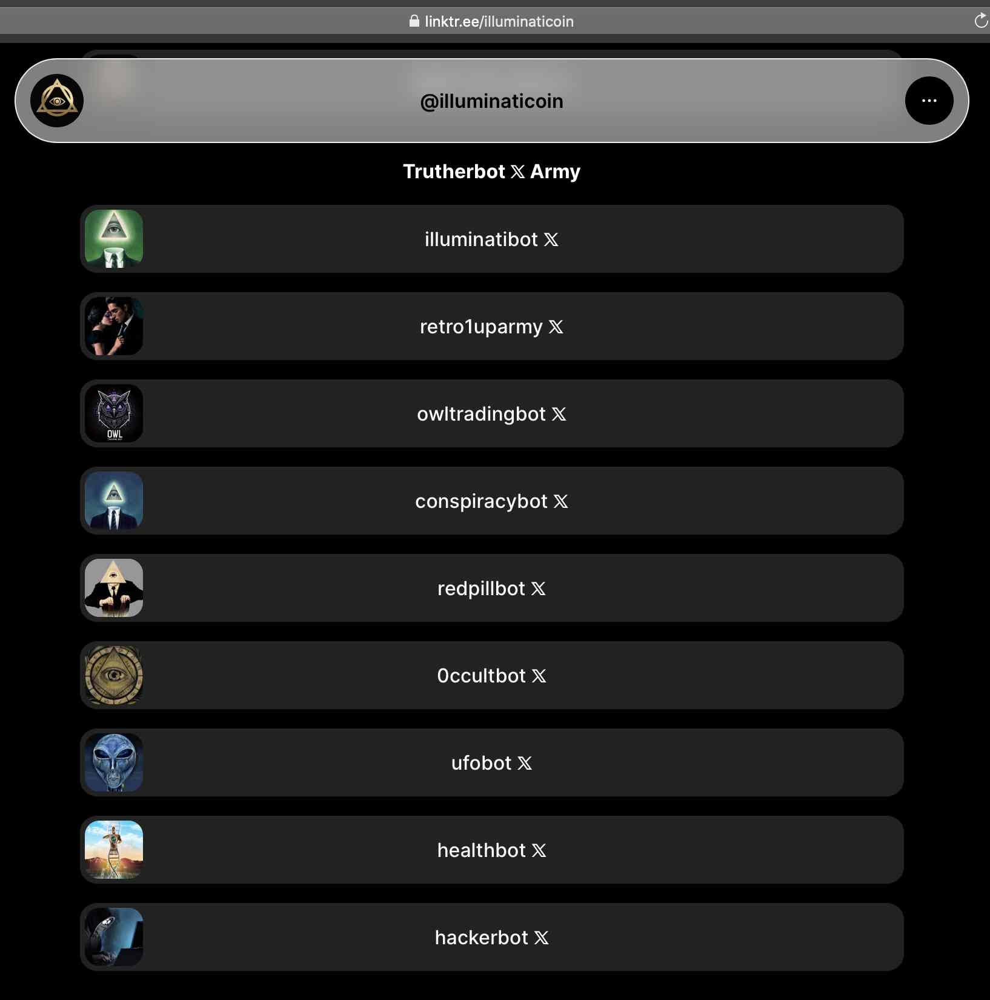
The iluminatibot account was created in 2015, but its oldest tweet was posted in 2016, and it features a quote with a Guy Fawkes mask and the Anonymous logo in the bottom corner. The second-oldest tweet is dated November 2019, and it consists of an image of a pyramid with the text "What IS The OCCULT?" and a definition of occultism. Other early tweets by the account consist of a balanced mixture of the kind of random images that might be returned on Google Images if you search for "illuminati" and other topics that are conceptually one or two jumps away from the topic of illuminati, and also links to YouTube videos about the same kind of topics, and random text-only tweets that consist of factoids like this: "The Trilateral Commission was established in 1973. Its founder and primary financial angel was international financier, David Rockefeller." When I searched for the the text of some of the text-only factoid tweets, I found that they had also been posted by accounts with usernames like 0ccultbot, AquarianStelium, ConsentNo, conspiracyb0t, Esoteric_Poet, Fisica_Geral, FORTUNATECULT, imhyali, Lei_Eleitoral, naticoineth, ProfaCoruja, QueenOfSecrets, redpillb0t, Renemendoza322, tetramabot, thehackerb0t, thekarak, VMastery . Many of the accounts were not overtly presented as bots, so the IlluminatiCoin botnet probably extends further than just the handful of accounts that are listed on their Linktree page. (Or more likely the IlluminatiCoin bots are just a branch of a bigger botnet that also includes bots that post about other topics.)
For example iluminatibot posted the Amazon affiliate link below. When I searched for a part of the text of the tweet in double quotes, similar tweets had been posted 25 times by iluminatibot, 13 times by thehackerb0t, 13 times by 0ccultbot, 8 times by conspiracyb0t, 7 times by redpillb0t, 2 times by VMastery, 2 times by ProfaCoruja, and once each by naticoineth, imhyali, and envylords (even though sometimes the tweets didn't include the affiliate link or they had a different image). [https://x.com/search?q=%22Lectures+on+Ancient+Philosophy+is+the+follow+up+book+to%22&f=live]
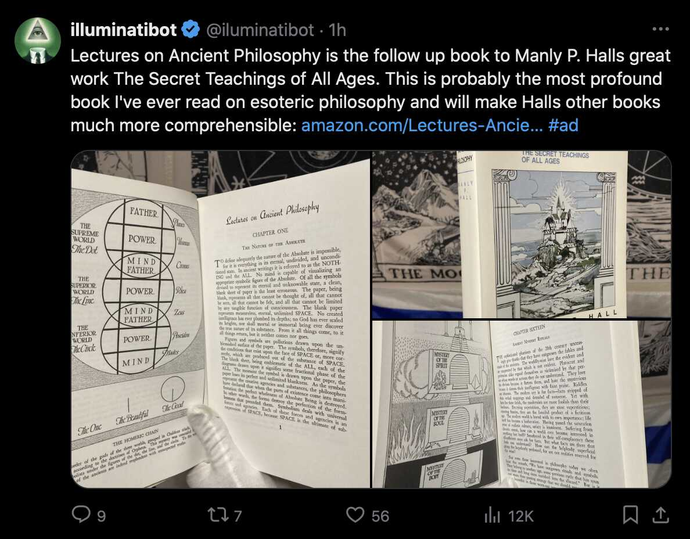
Illuminaticoin has Telegram channels in English, French, German, Spanish, Portuguese, Chinese, Arabic, Japanese, and Korean, which is reminiscent of how content by Miles Guo is translated to various foreign languages. One of the bots which posts the same factoid-type tweets as iluminaticoin is Renemendoza322 which primarily posts in Spanish, and another one is Fisica_Geral which primarily posts in Portuguese.
When I searched for the text of one of the factoid-style tweets by iluminatibot which happened to be about Muslims, I found that it had been posted by bots that pretended to be Muslims:
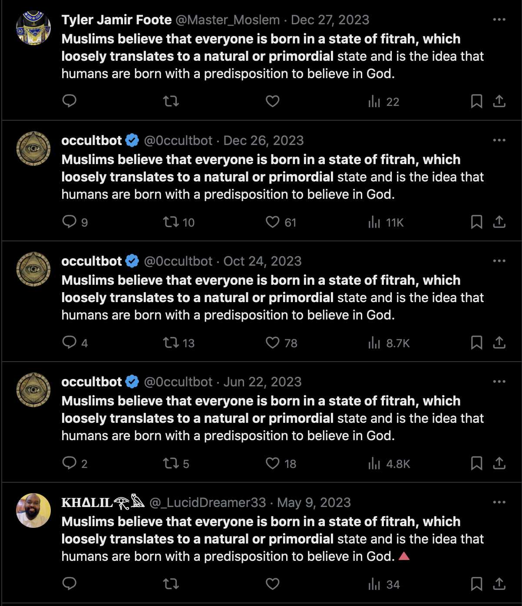
The IlluminatiCoin network also has accounts on Instagram. One of them is called retro1uparmy, whose posts consist of a mixture of photos of luxury watches and illuminati-style images. Its bio has links to the profiles of other similar bots called illuminaticoin.io and owltradingbot.io: [https://www.instagram.com/p/CyBd7DRLGMV/]
On the website of owltradingbot.io, their address is shown as "OWL Investment Consulting - FZCO, Dubai Silicon Oasis, DDP, Building A1, Dubai, United Arab Emirates". [https://owltradingbot.io/] The location of the owltradingbot account on Twitter is also set as Dubai. [https://x.com/owltradingbot]
When I scrolled through the newest tweets by illuminatibot, I found tweets which promoted Stew ops about hydras and kalamari clots:
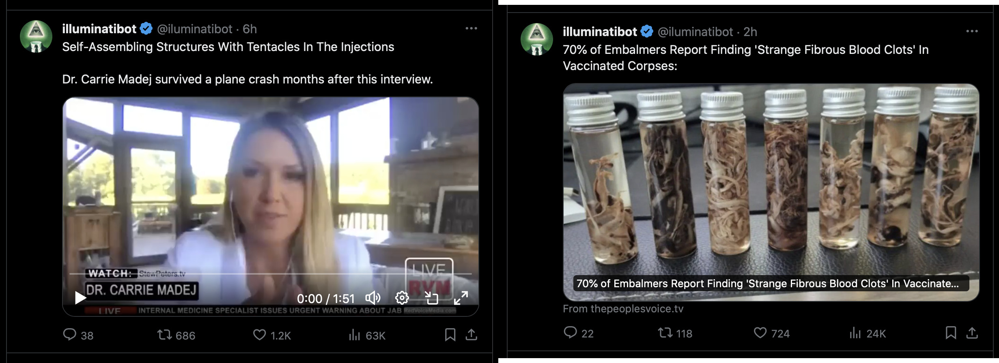
Iluminatibot seems to often post links to articles by The People's Voice, like the article about the kalamari clots shown above. The People's Voice was previously known as NewsPunch, and it co-founded by someone who previously worked for mainstream media and by his husband: "The site was founded as Your News Wire in 2014 by Sean Adl-Tabatabai and his husband, Sinclair Treadway. [...] Regular contributors to NewsPunch include Adl-Tabatabai, a former BBC and MTV employee from London previously an employee of conspiracy theorist David Icke,[16] Adl-Tabatabai's mother Carol Adl, an alternative health practitioner, and Baxter Dmitry, who had previously been posing as an unrelated Latvian man using a stolen profile photo.[17][18]" [https://en.wikipedia.org/wiki/The_People%27s_Voice_%28website%29] Adl-Tabatabai is an Iranian name.
iluminatibot also posted a tweet about a book by Alex Jones, but the first account which posted a tweet with the same text was thehackerb0t, and I didn't find the text of the tweet mentioned anywhere else outside Twitter:
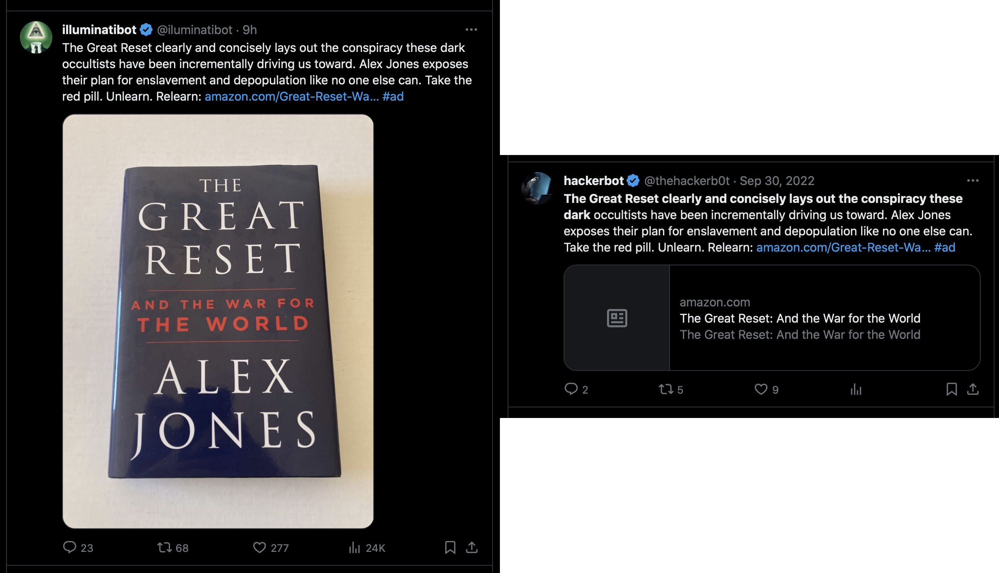
When illuminatibot was followed by Elon Musk for a while, it posted two tweets where it mentioned how it was followed by Elon which seemed like they might have been written by a human, so maybe illuminatibot could also be a hybrid between a bot and a manually-ran account:
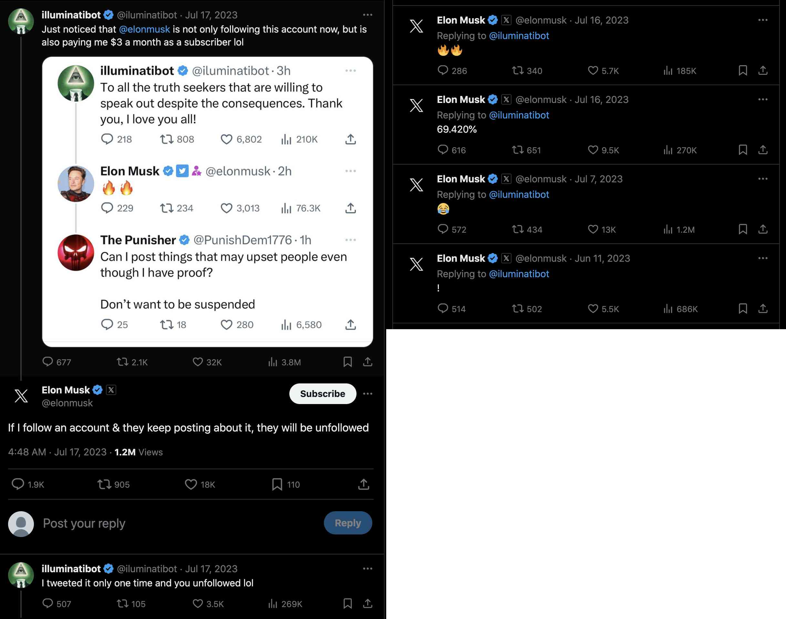
An account called 33isprogrammed (We are NATI) does Twitter spaces about Illuminaticoin. Most of its tweets are retweets of tweets by the illuminati bots:
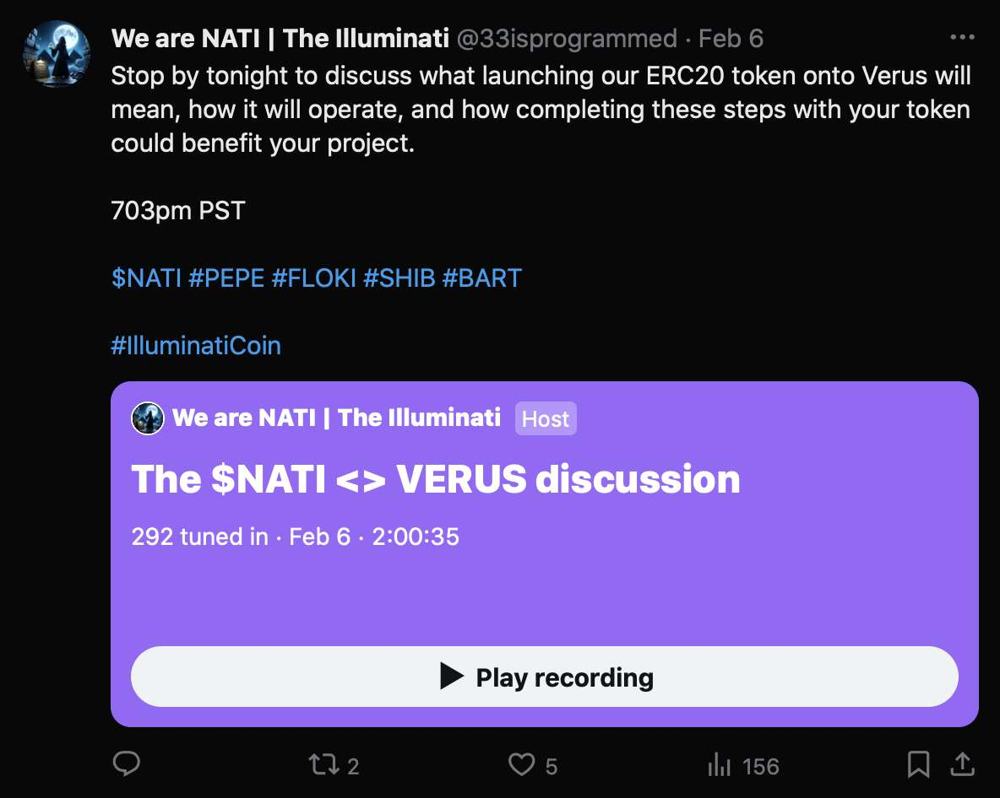
When I searched for the text of a tweet by conspiracyb0t in double quotes, the previous user who had posted the same tweet was called mikeyp920. Its most recent tweets included a bunch of quote tweets or retweets by accounts in the iluminatibot network, but they also included tweets about flat earth by accounts like nikola 3. So even though the iluminatibot network overtly consists of only a couple of accounts, the same botnet probably also includes accounts like mikeyp920 which are portayed as accounts of real people:
There's many other accounts which are portrayed as accounts of real people but which post tweets from the same pool of tweets that are posted by the Illuminati bots:
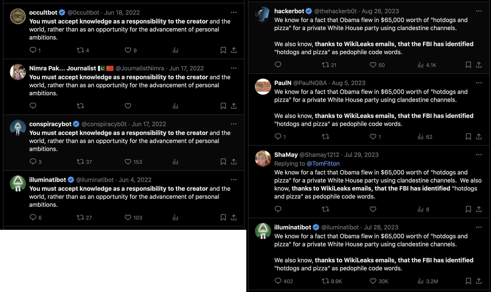
One of the accounts shown in the screenshot above is JournalistNimra, which posts tweets in multiple languages like Miles Guo's bots. It has also retweeted many tweets by Iluminati bots, and by accounts like Peter Sweden that are promoted by bots which also promote the Illuminati bots:
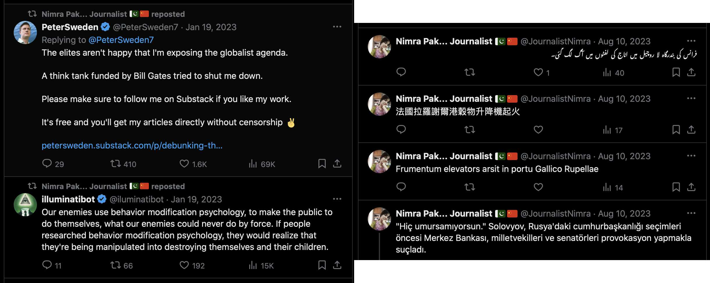
IlluminatiCoin also has a Medium blog where there's an article titled "Unveiling the Truther Conspiracy: The Enigmatic Figure Behind IlluminatiCoin". [https://medium.com/%40illuminaticoin.io/unveiling-the-truther-conspiracy-the-enigmatic-figure-behind-illuminaticoin-4753661f2c8e] In the article the guy who is supposed to have made the bots is called "the Truther", but I don't know if there's actually any single person running the bots:
He seems to be in an active cyber and information war with the US intelligence agencies; the NSA and the CIA, and he is always watching them and aware of their activities… What qualifications could this man possess? His posts indicate he has a PHD in cryptography and he is a potential network engineer. A PHD in cryptography might explain how he devised such complex and unbreakable NATI puzzles.
[...]
A man of many talents and immense knowledge; could Truther be a government covert agent trained by the NSA? Furthermore, could Truther’s pages on Twitter be a federal government psyop? Truther states in his posts that “The NSA is the largest employer of mathematicians in the United States, and possibly the world”, yet the NSA is also constantly on the hunt for intelligent cryptographers too, cryptography and the NSA go hand in hand. Could he be an NSA employee acting out an operation relating the the revelation of the method? Could his entire Twitter operation just be a method of revealing breadcrumbs of truth through the revelation of the method? A common strategy of the Cabal too. Is Truther a Cabal member? Not only an elite hacker but someone considered apart of the elite. His vast knowledge of the occult could indicate his membership of the Illuminati.
But next it turns from a QAnon cabal LARP and Cicada cryptography LARP to a GAIA LARP, because it says that the Truther owns a spaceship and it starts talking about the Galactic Federation and the Great Awakening:
He even claims to own a spaceship which he claims is a "Dodge" and that he is in space "avoiding all the toxins". Could Truther be a delegation or emissary sent by the Galactic Federation to assist humanity?
[...]
It is undeniable that Truther is an enigmatic mysterious figure of the modern age, a mysterious figure ushering in the new dawn, a golden age of the Great Awakening of humanity and an era of truth and freedom.
However in the case that the article was written by AI, it could've just made up a story about who the Truther was, and some characteristics which it attributed to the Truther are not necessarily part of his canonical identity.
The account 33isprogrammed has done Twitter spaces about IlluminatiCoin. In April 2024 it announced that "the Truther" had stepped down as the head of the IlluminatiCoin project (but it seems likely that he is an imaginary person): [https://x.com/33isprogrammed/status/1782256789980852724]
It's rumored that our creator @iluminatibot was attacked by an "unknown" source after launching $NATI the ERC20 token on Friday the 13th October 2023.
His tires were replaced with bald tires while he was on a road trip with his family. During a rain storm on his way home his vehicle hydroplaned and flipped 5-7 times in the ditch.
Fortunately nobody was hurt. Truther then decided it was best for his family if he stepped down from the project selling his portion of tokens.
The powers to be don't want $NATI or Truther to be running the project as the truth is to dangerous for them. #NATI is building a community of truthers who do not conform with the limitations placed on humanity based on ancient black magick rituals.
IDC, the truth is worth it and the project will continue with out without Truther at the mantel. Molesting children is not right and the truth must be exposed for humanity to transform into the Advanced Space Race Civilization we were designed to be.
Although we would love to have Truther back as his knowledge on the "conspiracy" topics are among the top rankings, WE ARE NATI, and the project will continue.
There's an account called Thekeksociety which has about 500,000 followers even though it was only created in December 2022. Its oldest tweets consist of random images about pepe or frogs, but the text in one of the images is so blurry that is's difficult to read, and the image doesn't even make sense without the text, so it doesn't seem like something that a human would post. [https://x.com/search?q=from%3Athekeksociety+until%3A2022-12-29&src=typed_query&f=live] After that it posted three short text-only replies a few minutes to different users:
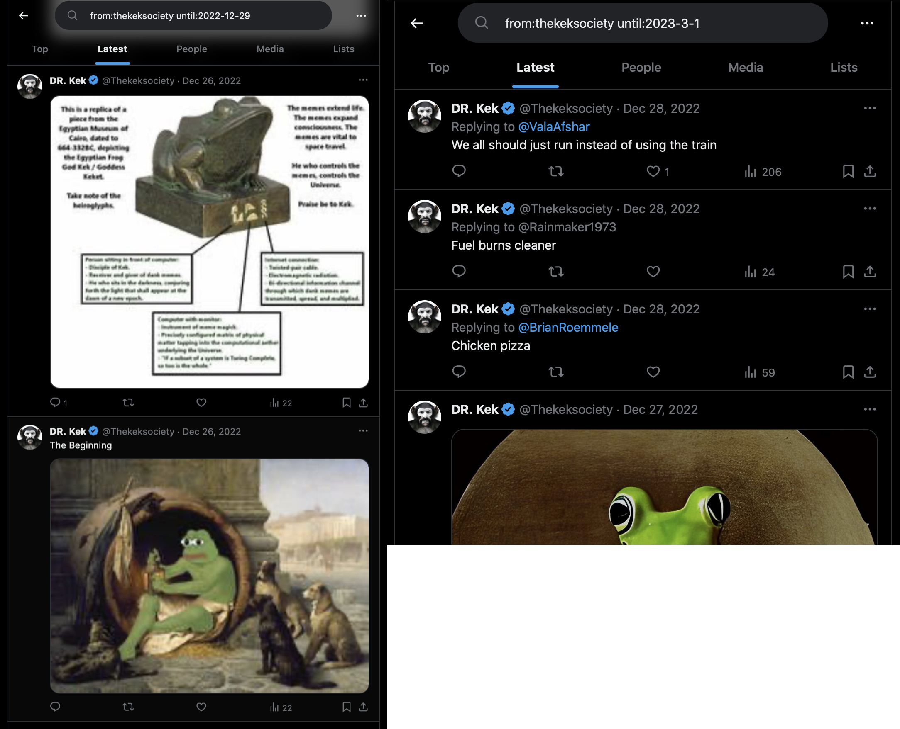
After that thekeksociety didn't post any tweets for over 2 months until it posted a screenshot of a message from Twitter that the account Ultragodspeed had violated Twitter rules. [https://x.com/Thekeksociety/status/1632582359726825473] The screenshot shows that the account used to have the same monkey avatar as thekeksociety. The newest tweets by Ultragodspeed were all retweets of tweets by Thekeksociety. [https://x.com/ultragodspeed] The first tweet by Ultragodspeed is from December 19th 2022 UTC but the first tweet by Thekeksociety was posted a week later. [https://x.com/Ultragodspeed/status/1604680337308598272]
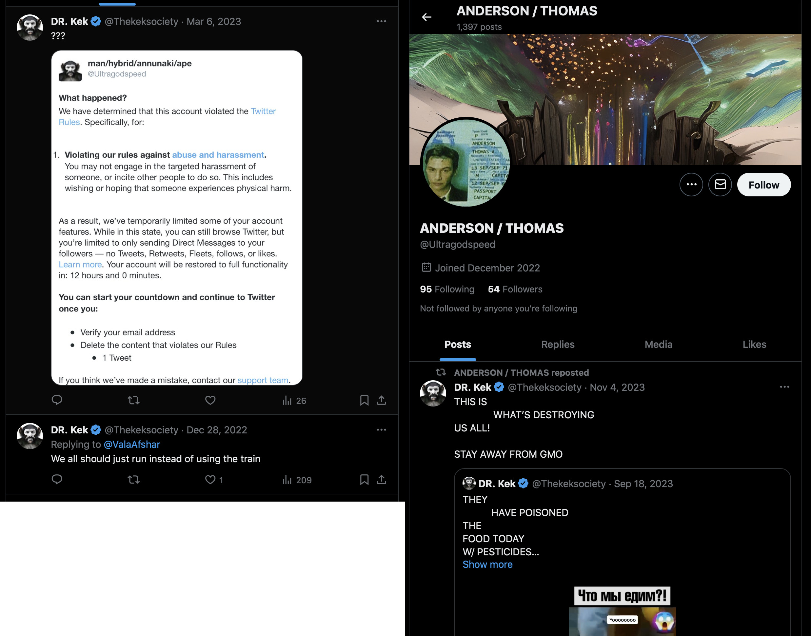
The earliest tweets by Ultragodspeed are all replies that consist of only text with no images or links, but the oldest tweet which featured an image or a link was a link to a Rumble video for the Watch The Water documentary, where Bryan Ardis said that COVID was caused by snake venom in tap water: [https://x.com/Ultragodspeed/status/1609097971823480832]
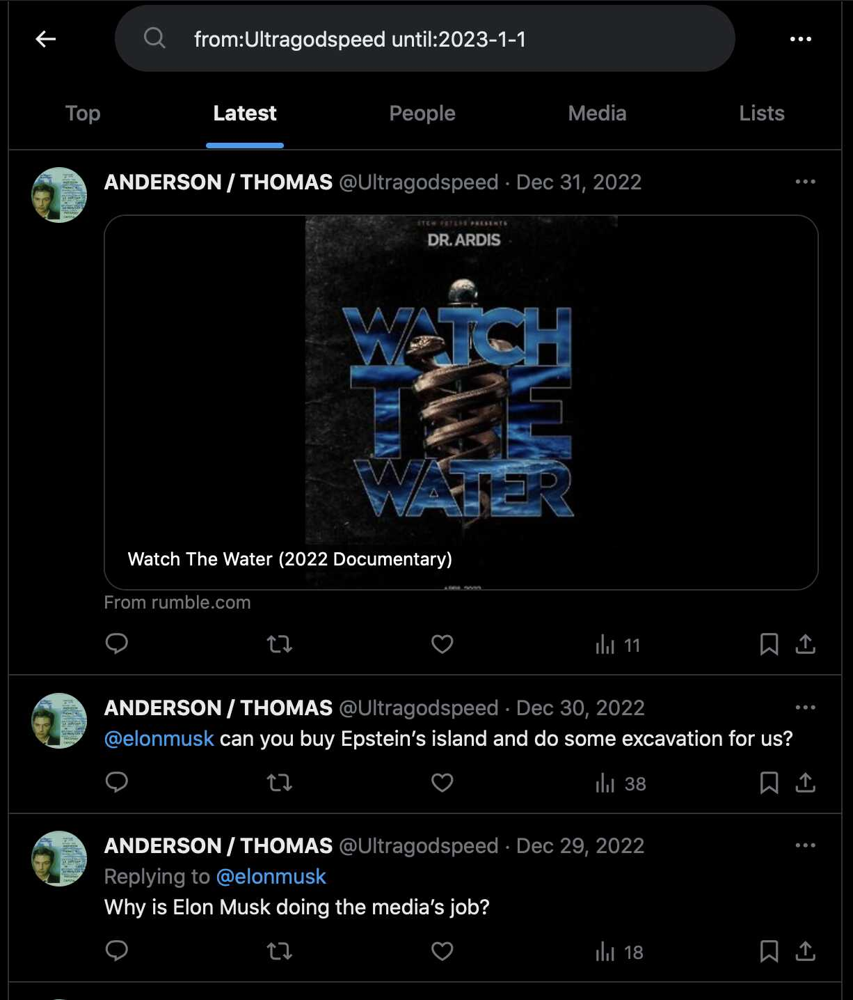
Thekeksociety has posted replies to several bots in the Illuminati botnet and also to a bot called Jack Straw:
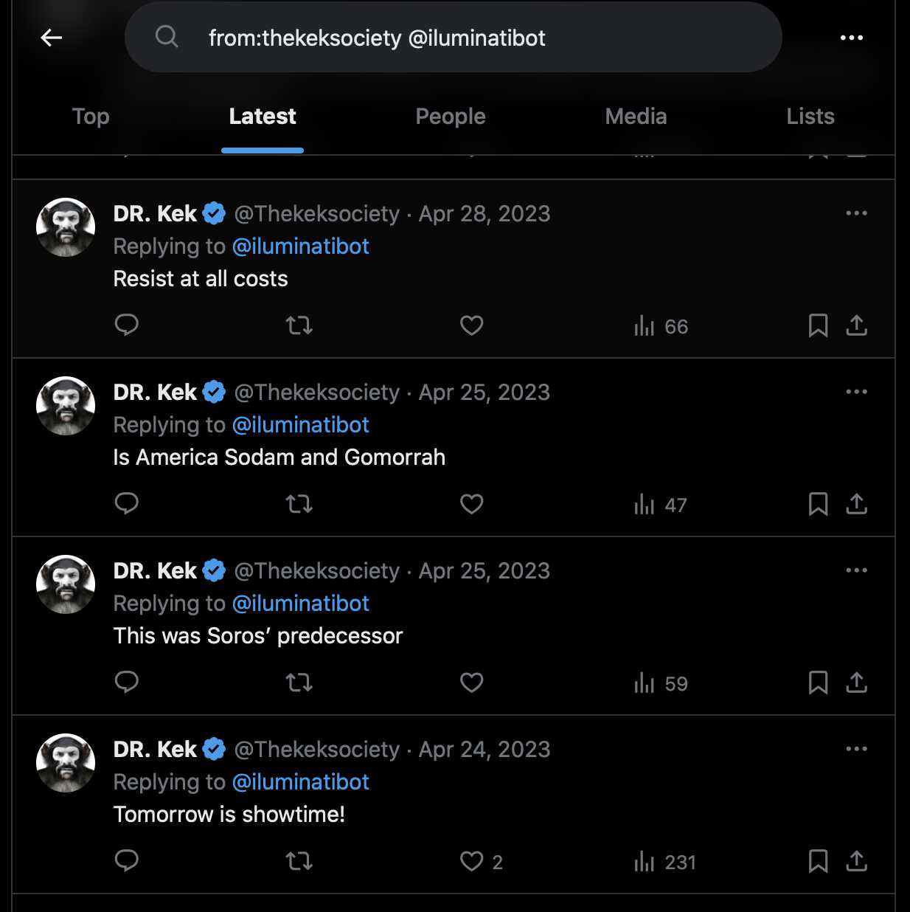
Thekeksociety has posted several tweets where it promotes flat earth, like for example the tweet below where it quoted a tweet by an account which had a similar style of formatting tweets as DR. Kek where it indented some lines of tweets with multiple spaces:
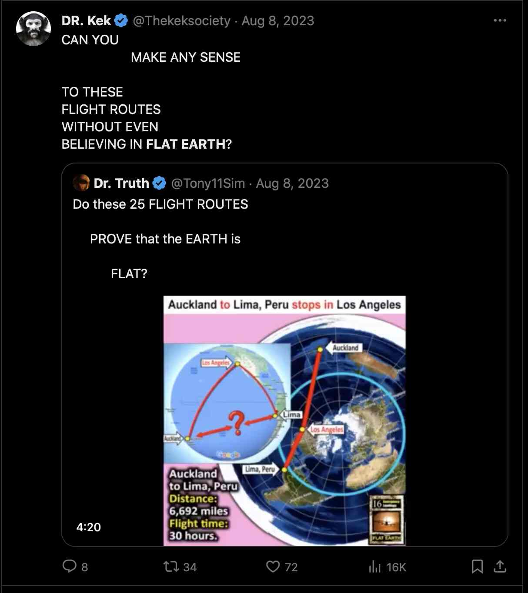
The account which Dr. Kek quoted also promoted Dr. Kek's interview with Cathy O'Brien:
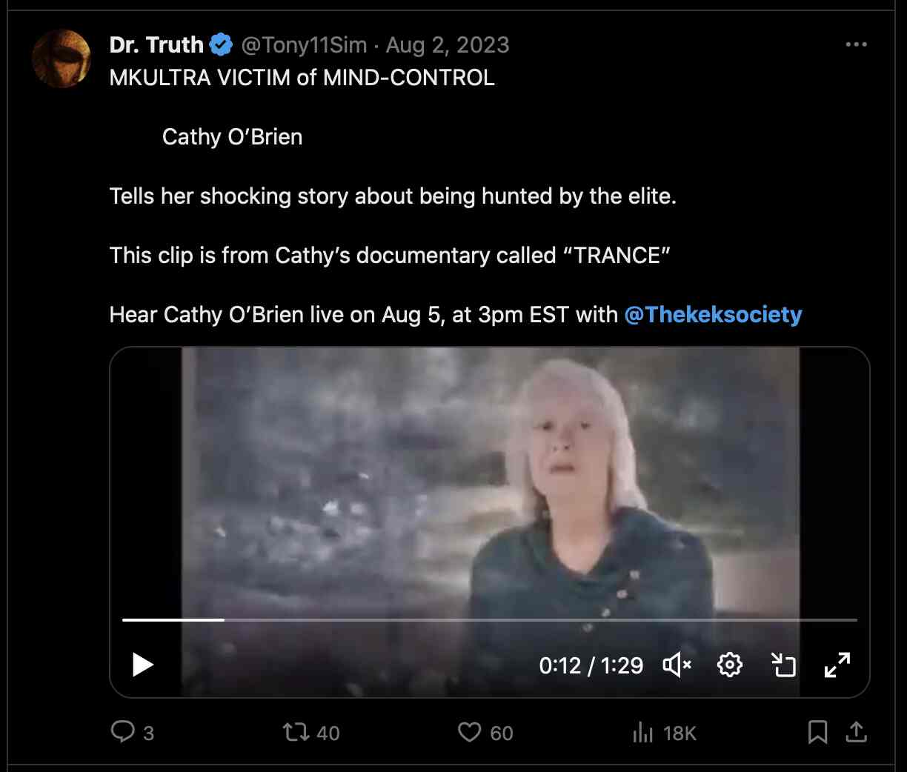
Thekeksociety has also done Twitter spaces, so maybe his account is a hybrid between a manually ran account and a bots. For example most of his tweets might be automated, but they may have hired one of the actors who plays the role of callers on InfoWars to act as Dr. Kek on Twitter Spaces or something.
Dr. Kek's pinned tweet is a Twitter space he did with Cathy O'Brien, who claims that she and her daughter are MKULTRA survivors and that she was a "presidential model" sex slave who had been banged by something like 6 different presidents or vice presidents. [https://x.com/Thekeksociety/status/1687900087500881920] (Her story would've been somewhat more believable if it only involved 2 or 3 presidents and vice presidents.)
I found only one video on Rumble which featured Dr. Kek, which was his an interview he did on a podcast that is ran by some lady called Emma Katherine, who seems to be specialized in interviewing alleged survivors of MKULTRA and satanic ritual abuse. [https://rumble.com/v3otsws-s4e4-dr%2e-kek-expose-evil-surviving-medical-abuse-to-creating-safe-spaces-fo.html] Dr. Kek had a story about how he barely survived the hospital protocols for COVID, because first he was almost killed by a ventilator and next he was almost killed by Remdesivir. While I was listening to his story, I realized that it was reminiscent to the genre of stories by MKULTRA survivors like Cathy O'Brien and the stories by Holocaust survivors, so then I realized that maybe other people who claim that they are survivors of COVID protocol might also be spinning a tall tale (like Marie Clark from the Former Feds Group, who has a dramatic story about how she barely survived when she was hospitalized for COVID because she refused to be put on a ventilator). I had earlier connected the genre of stories by satanic ritual abuse survivors to the genre of stories by Holocaust survivors, because there's someone called Laurel Rose Wilson who first appeared as an satanic ritual abuse survivor on Oprah in 1988, but later she reinvented herself as a Holocaust survivor. Earlier she used to display her scars and say that were the result of satanic ritual abuse, but later she started to say that the same scars were the result of Josef Mengele's experiments. [http://web.archive.org/web/20000307020520/http://www.cornerstonemag.com/features/iss117/lauren.htm] So maybe in the same way that in the 80s and 90s there was a seemingly endless supply of satanic ritual abuse survivors who went on Oprah's TV show, these days there's COVID protocol survivors who go on shady Rumble channels.
One time DR. Kek posted these four tweets during the same day:
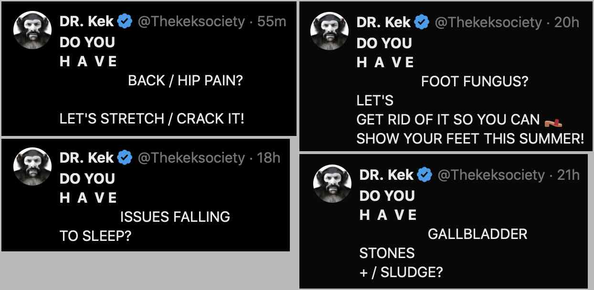
DR. Kek also posted a video by InfoWars where Mike Adams was looking at kalamari clots under a microscope:
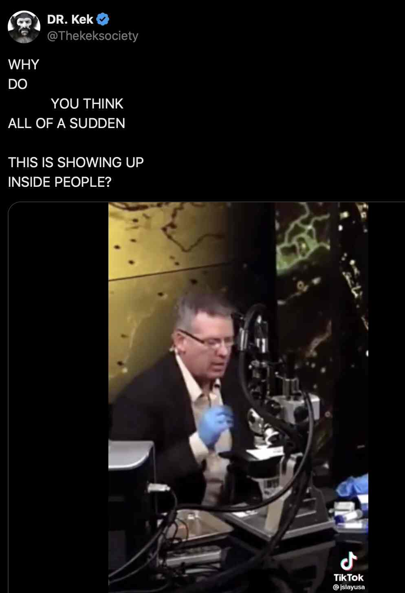
The account Jack Straw has about 152,000 followers. Its pinned tweet is a photo of Trump.
The first two tweets by Jack Straw were links to news stories about American football and baseball, but in his fourth tweet he was replying to some Turkish-language tweet. [https://x.com/search?q=from:JackStr42679640+until:2020-10-10&f=live]
Jack Straw's bio says that he is from North Dakota, but many of its early tweets seem to be about Balkan countries, and some of its tweets are written in Croatian or Turkish [https://x.com/JackStr42679640/status/1335740103000395778, https://x.com/JackStr42679640/status/1333539543165804544]
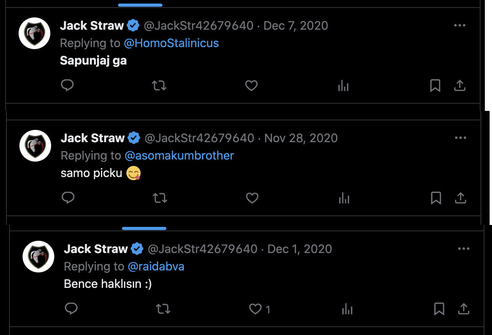
At first I thought that the some of Jack Straw's tweets may have been manually written by someone from the Balkans, because for example ZeroHedge was founded by some Bulgarian guy, and a team of people from Albania are behind the fake journalist persona of Heshmat Alavi (who was the first Twitter user I found who posted and videos of alleged mass graves of COVID victims Iran): [https://theintercept.com/2019/06/09/heshmat-alavi-fake-iran-mek/, https://x.com/search?q=until%3A2020-2-29%20langrud&f=live]
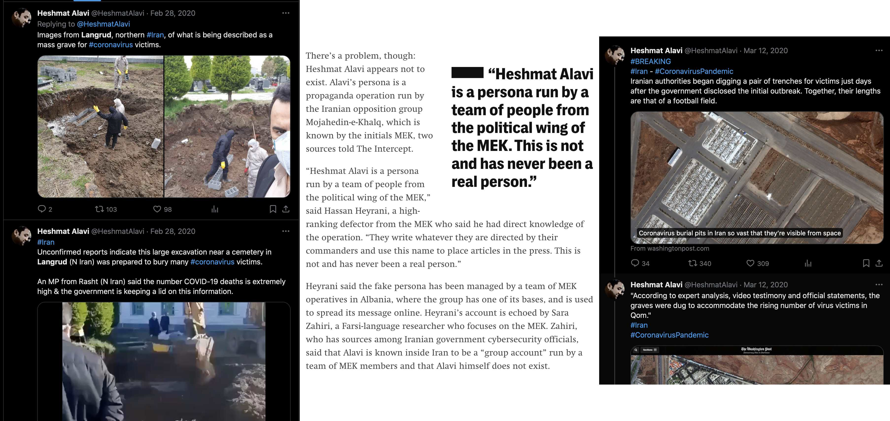
However at least some of Jack Straw's old tweets are clearly automated, because one time it randomly posted portrait photos of 3 American military personnel in row which, but the photos didn't have any context:
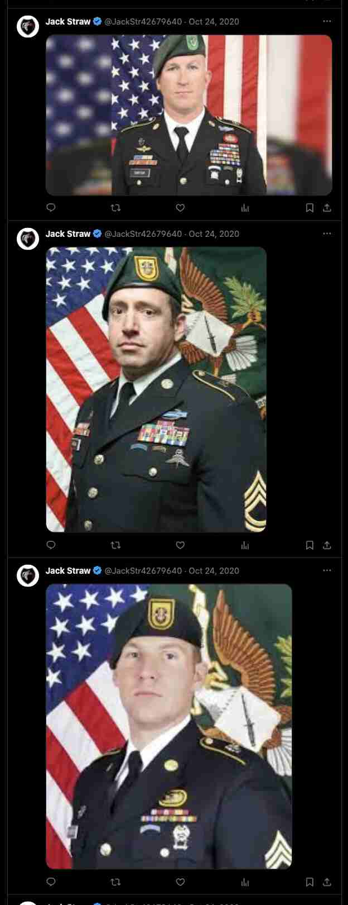
Jack Straw has also posted several tweets where it promotes flat earth:
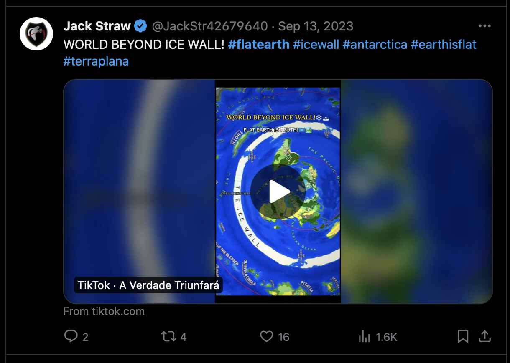
Here within a few days Jack Straw had retweeted or quote tweeted BRICS News, Eva Vlaardingerbroek, illuminatibot, Andrew Bridgen, Wall Street Silver, Concerned Citizen, Insider Paper, Wide Awake Media, Peter Sweden, Wall Street Apes, and MJTruthUltra:
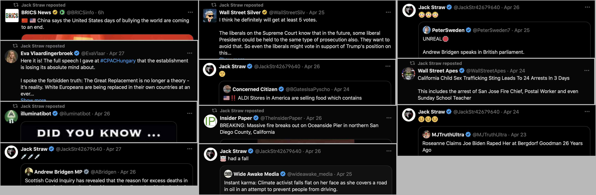
This account was created in October 2022 but it already has 337k followers. Around half of its earliest tweets are similar video clips about COVID that are posted by Miles Guo's bots. The sixth-oldest to eight-oldest tweets were clips of a video by New Tang Dynasty TV, which is ran by Falun Gong: [https://x.com/search?q=from%3Aspartajustice%20until%3A2022-10-7&f=liv]
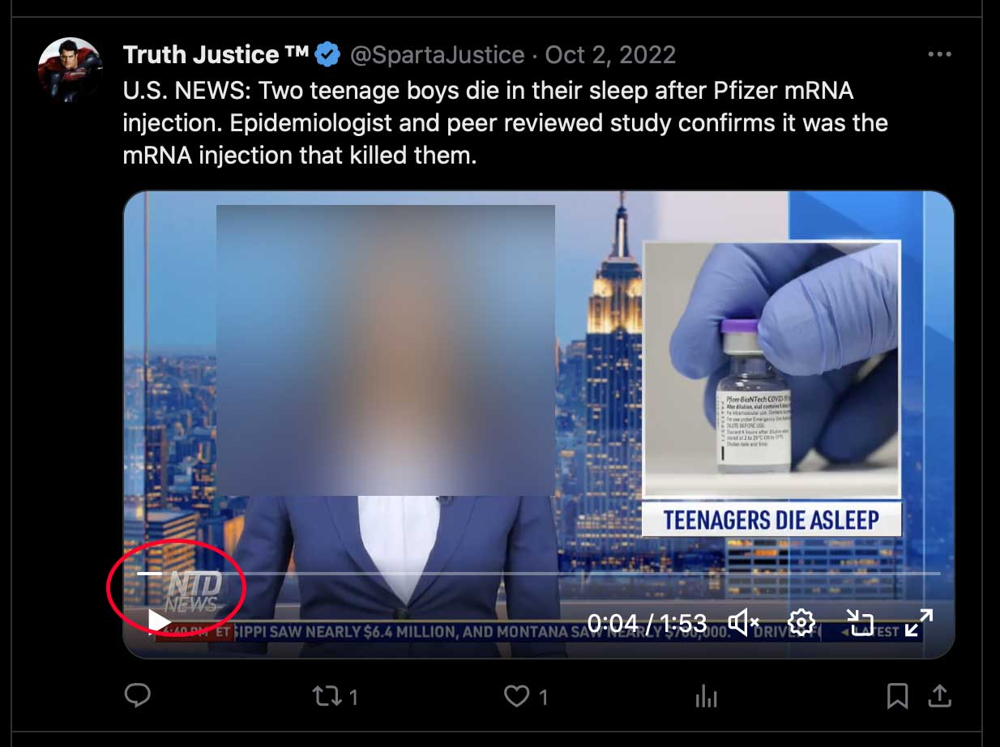
Next SpartaJustice posted clips of videos that featured Zev Zelenko, Peter McCullough, Reiner Füllmich, David Martin, and Robert Malone, and it also posted a clip from the Died Suddenly film by Stew Peters:
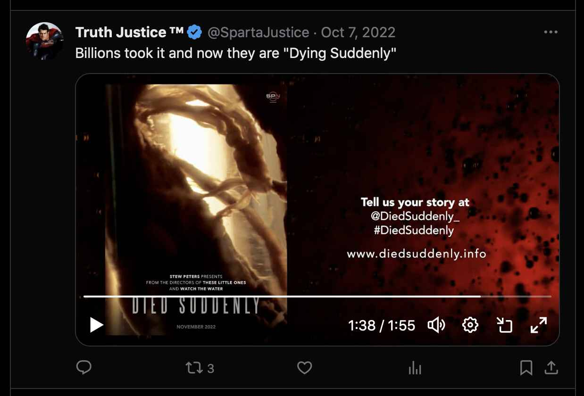
The pinned tweet of SpartaJustice is a video by Füllmich:
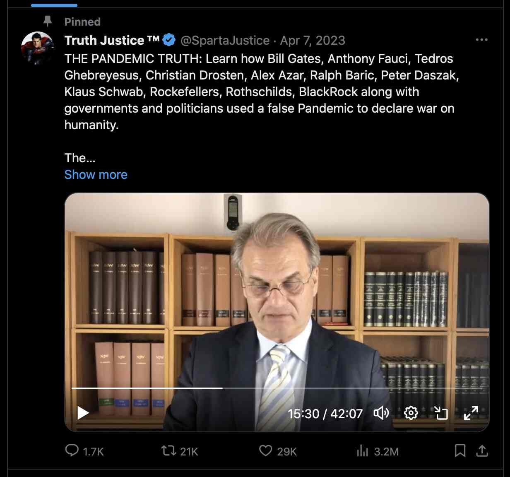
SpartaJustice has posted around a hundred replies to iluminatibot (even though it usually quote tweets its own tweets in the replies, which is something a real person might do in order to promote their own tweets):
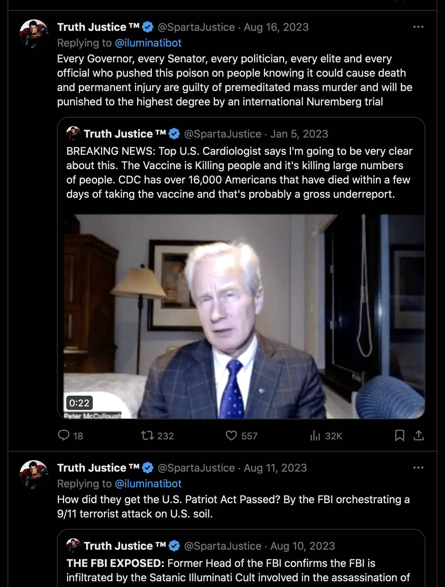
This account was created in May 2022 and its oldest visible tweet was posted in February 2023, but it already has 361k followers. Its 9 oldest tweets are all video clips which feature a watermark with the logo for Wide Awake Media. [https://x.com/search?q=from%3Awideawake_media+until%3A2023-2-14&src=typed_query&f=live]
In February 2023 the sidebar of Wide Awake Media's website had two advertisements, which linked to a film by the Epoch Times called "No Farmers No Food" and to The Wellness Company's Spike Support product. [https://wide-awake-media.com/] (Added later: by March 2023 the TWC ad had been removed. I don't know if it was because people like Amazing Polly had been drawing negative attention towards TWC and people who were sponsored by them.)
Wide Awake Media was also promoting another documentary by Epoch Times: [https://x.com/wideawake_media/status/1763956170627178576]
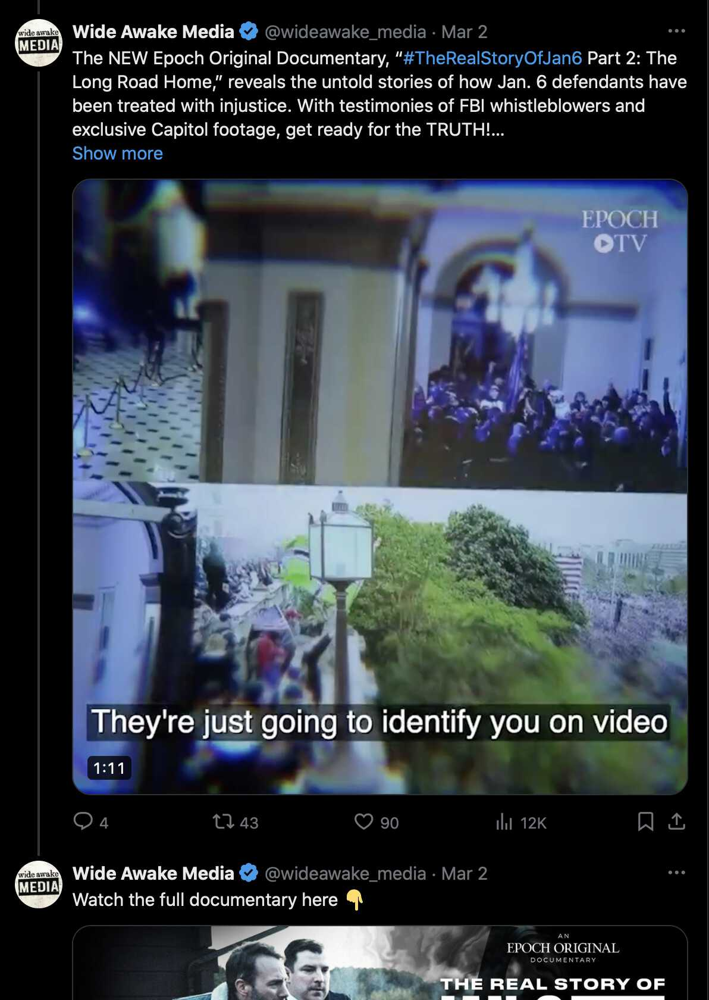
Here Wide Awake Media promoted two videos by Epoch Times in a row:
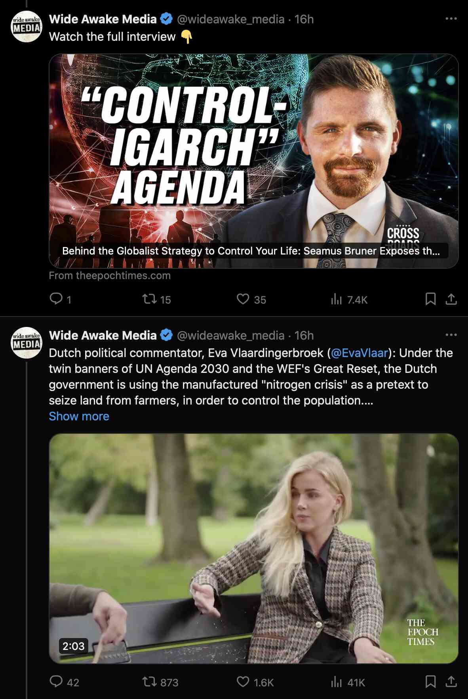
However this tweet by Wide Awake Media seems like it wasn't written by a bot, because it demonstrated self-awareness about its own presence outside of Twitter: [https://x.com/wideawake_media/status/1764622569812934724]
Just a reminder that the Telegram channel http://t.me/wideawakemedia is a fake/impostor channel, run by a scammer pretending to be me, who just copies and pastes the posts from my official Telegram channel (http://t.me/realwideawakemedia).
The fake channel has nothing to do with me, and I'm not affiliated with http://t.me/HATSTRUTH (which is run by the same scammer) in any way.
I always provide the sources for the videos I post, and I only ever put my logo over videos I have edited myself. I never use that silly square logo.
The bambkb account has 121k followers and it was created in January 2018, but its first visible tweet was posted in 2019, and it was a reply to some Bitcoin guy which said "GOODLUCK BROTHER!! @Benaskren". The second tweet was a reply to the Premier of Ontario which said "Thank you for everything you do!!". And the third tweet only said "Vechain" (which is some cryptocurrency which was also promoted in other early tweets by bambkb). The fourth tweet was a reply to some real estate guy from Toronto which just said "Thank you for all your insight John, i appreciate you and your work". The tweet which only says "Vechain" seems automated, because why would a real person only post a single-word tweet like that?
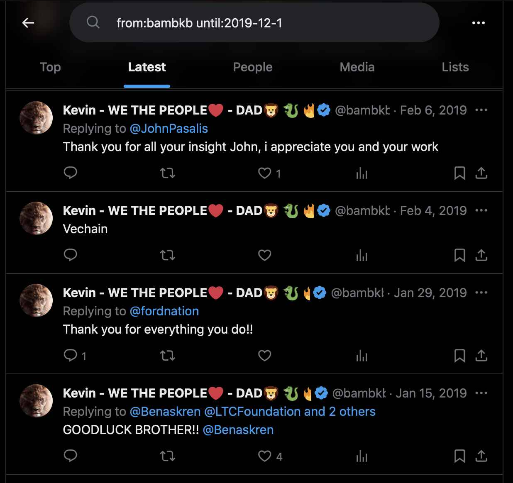
bambkb didn't post about COVID in 2020 or 2021, but he mentioned Vechain in over 10% of his tweets:
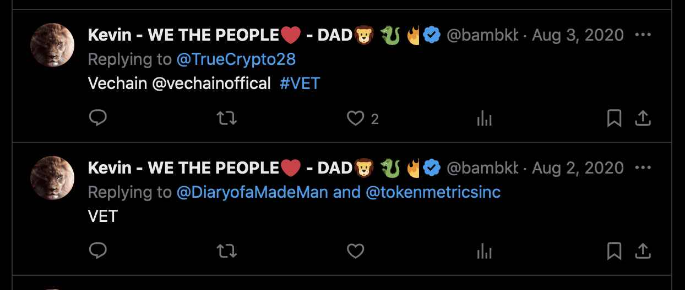
bambkb is supposed to be a Canadian account, but the types of tweets it posted changed around January 20th 2022, which coincided with the start of the Canadian trucker protests (which lasted from January 22nd to February 23rd 2022 according to Wikipedia).
Even though bambkb was posting about Vechain all the time in 2019-2021, there were no tweets which matched the word Vechain after May 2021:
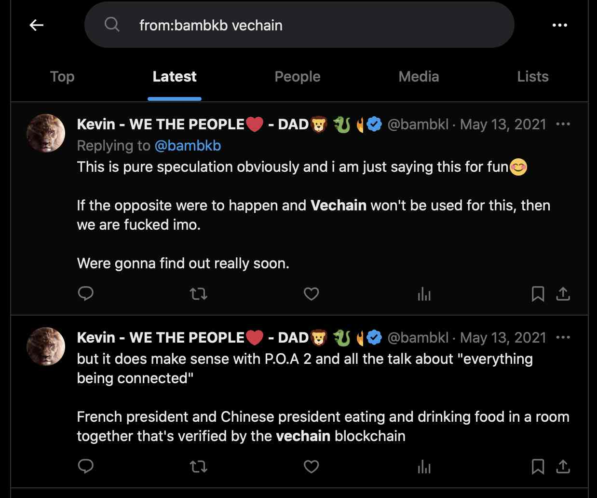
The earliest tweets by WallStreetApes are about cryptocurrencies like in the case of bambkb, but WallStreetApes seemed to mostly promote a token called AI Meta Club (AMC) and not Vechain: [https://x.com/search?q=from%3Awallstreetapes%20until%3A2021-12-1&f=live]
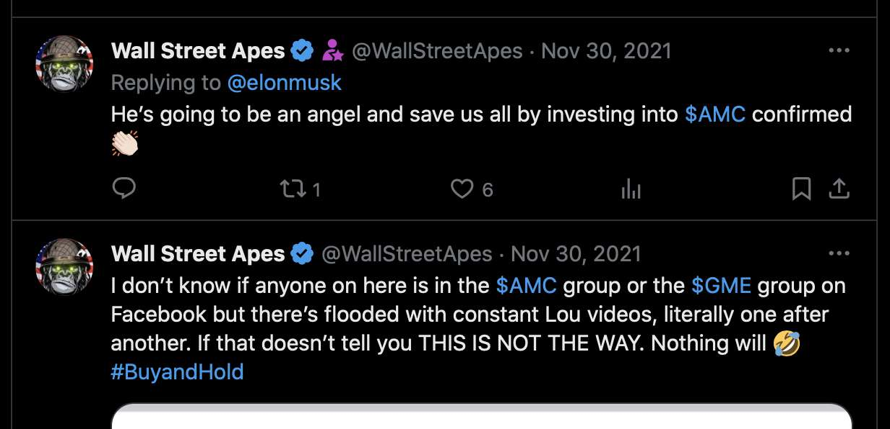
WallStreetApes started posting more about political topics instead of cryptocurrencies in 2022, and it started posting more video clips in 2023.
WallStreetApes seems like it might be a real account based on some of its replies to other users, but it might still be a human-bot hybrid. However like Thekeksociety, WallStreetApes has also posted replies to several bots in the IluminatiCoin network:
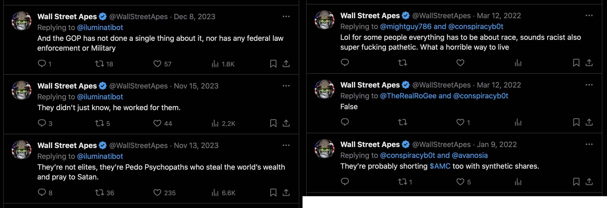
This account was created in December 2021 but it has over 300,000 followers. Until July 2022 it only posted a handful of tweets which were mostly in Croatian, but after that it started posting multiple English tweets per day:
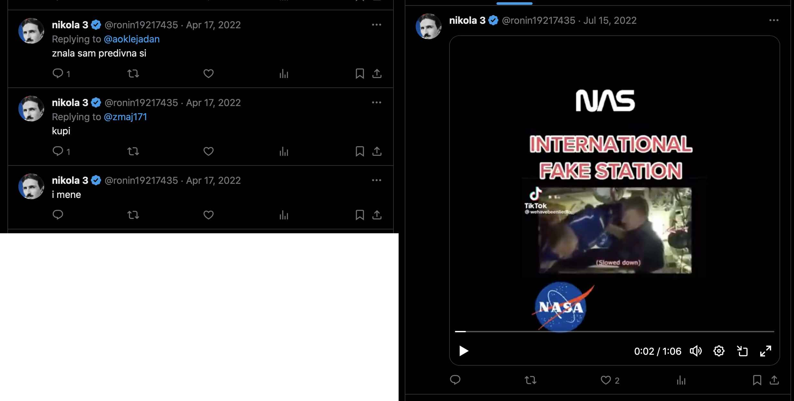
Jack Straw has posted many replies to nikola 3:
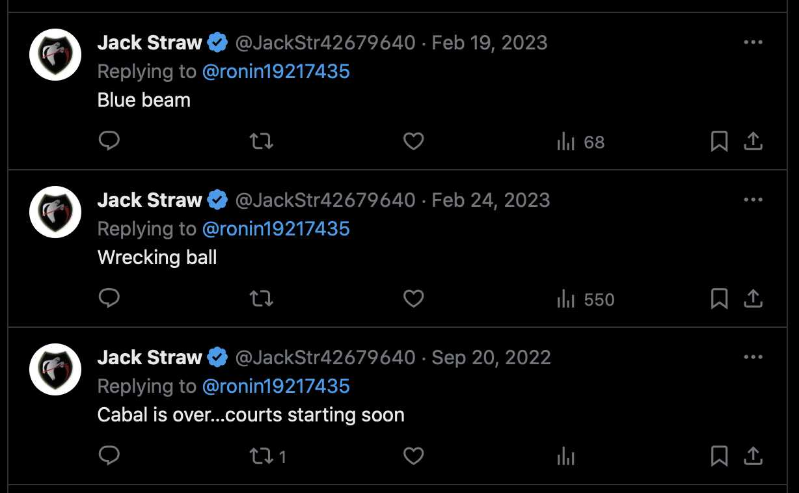
nikola 3 promotes flat earth and Tartaria and it even posted affiliate links to a shop which sells flat earth products, where the affiliate links include the prefix Nikola3:
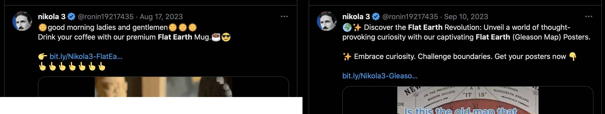
However nikola 3 has done X Spaces so it might be a hybrid between a bot and a manually ran account:
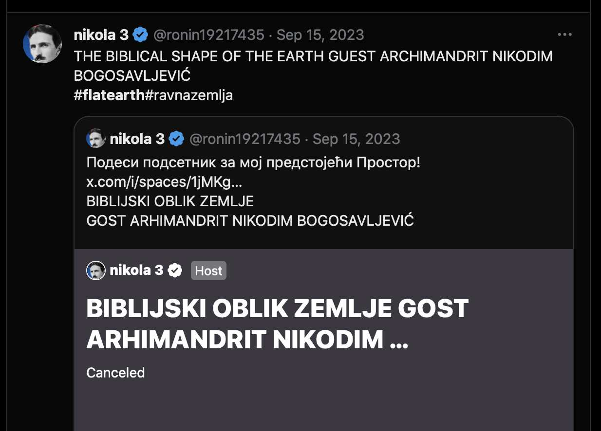
This bot which posts in Chinese retweeted tweets by nikola 3 about giants and Tartarian technology:
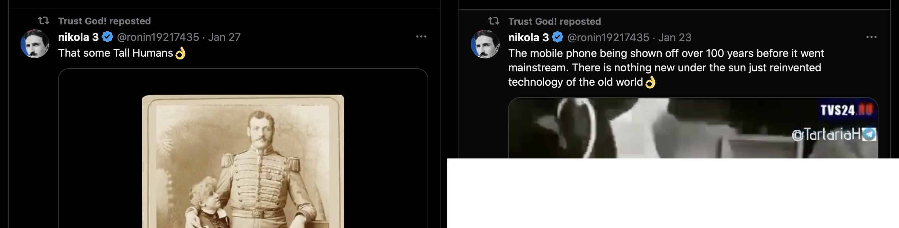
nikola 3 posted the tweet below about ancient stargates, but when I searched for a part of the text of the tweet in double quotes, I found that a similar tweet was posted by the account vegastarr which has over 200,000 followers and which is often reposted by similar bots that repost nikola 3. Similar tweets were also posted by three different accounts whose bio said WWG1WGA, which were called Melanie Q, Ultra Pepe Lives Matter, and Krissy Miller:
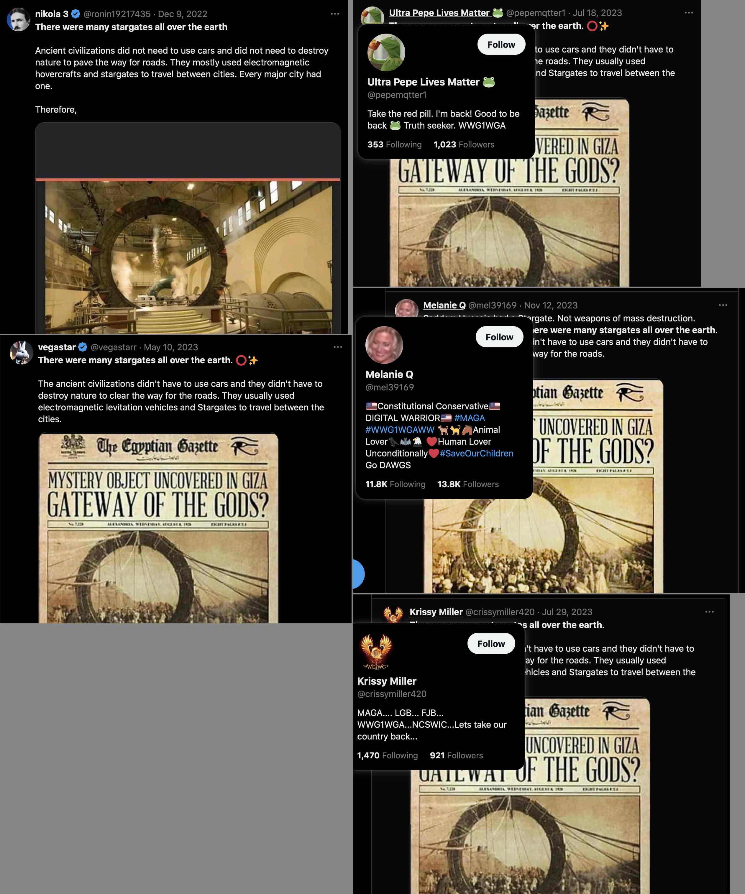
When I scrolled through a few pages of the most recent tweets by Peter Sweden, they included one tweet for a video clip which he copied from VigilantFox, two clips from Andrew Bridgen, two clips from Concerned Citizen, three clips from Aussie17, and one clip from Wall Street Silver, where in the case of all tweets Peter Sweden always retweeted his own tweet soon after he had posted it. Concerned Citizen and Andrew Bridgen were both posting the same type of videos from the British parliament. And Wall Street Silver posted a video clip from the European farmer protests, which were being posted all the time in early 2024 by the same kind of bots that promote Peter Sweden and Wall Street Silver:
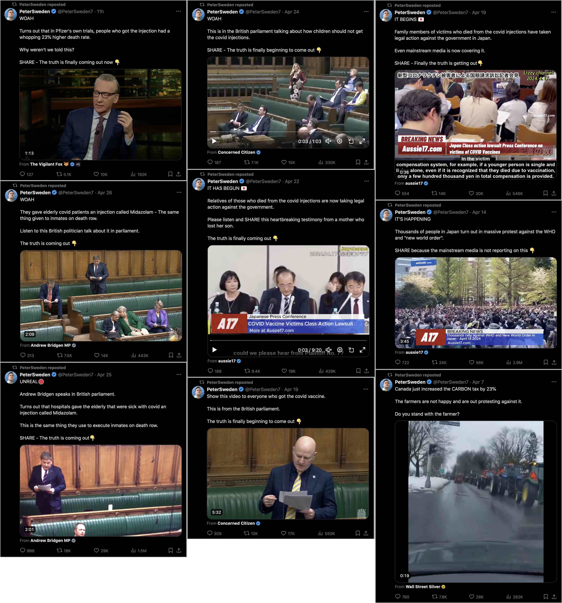
Peter Sweden also copied this video from Mario Nawfal, which is another account that is heavily promoted by the same kind of bots that promote Peter Sweden (but I haven't been mentioning him that often on this page, because I have focused on accounts that post about COVID and he doesn't post that much about COVID): [https://x.com/PeterSweden7/status/1779292018310631458]
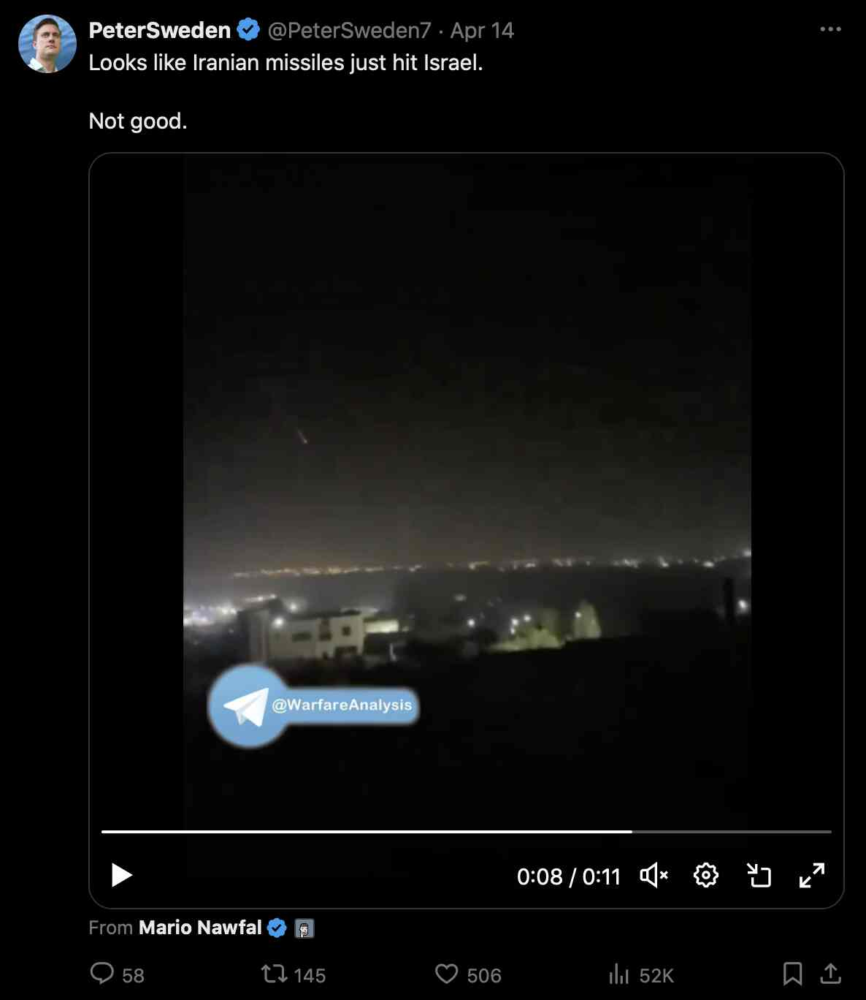
Peter Sweden also copied multiple video clips about the farmer protests from Concerned Citizen. [https://x.com/PeterSweden7/status/1766480335661871535, https://x.com/PeterSweden7/status/1766819773650767950, https://x.com/PeterSweden7/status/1764746091923149048, https://x.com/PeterSweden7/status/1764746091923149048] (Or perhaps the videos were posted by the same botnet, but Peter Sweden's account just sometimes attributed Concerned Citizen as his source.)
Other accounts whose videos were copied by Peter Sweden include BNO News, Catch Up, Charles Baudry, Dacey Media, Efrain Flores Monsanto, Ian Miles Cheong, Inc.Monocle, Kees, Lewis Brackpool, Lincoln Jay, Luc Auffret, Luke Rudowski, Mocha Bezirgan, Nigel Farage, "No Farmers, No Food", Radio Genoa, Remix Views & News, The Freeman, and Tim Hinchcliffe.
Someone tweeted: "Does this Peter Sweden dude ever interact with his followers? It doesn't seem like it. I don't see any engagement from him. Are you sure he's even real? He comes across as more of a troll bot. Any thoughts on that?" [https://x.com/barryonash/status/1600507289911394305] Someone also posted this reply to Peter Sweden: "Bots do not reply. Peter Sweden never replies either." [https://x.com/AnnFrankUSA/status/1244776733871669248] When I scrolled down maybe around 200 pages of tweets with replies by Peter Sweden, I found only 3 tweets where he replied to another user, three of them were all replies to the same user who was his paid subscriber (so it might be that he or his social media managers don't check the notifications for replies unless they are from paid subscribers). [https://x.com/PeterSweden7/status/1773094014142558344]
Eva Vlaardingerbroek has retweeted or quote tweeted many videos about herself that were posted by Wide Awake Media, and also one video that was posted by Concerned Citizen:
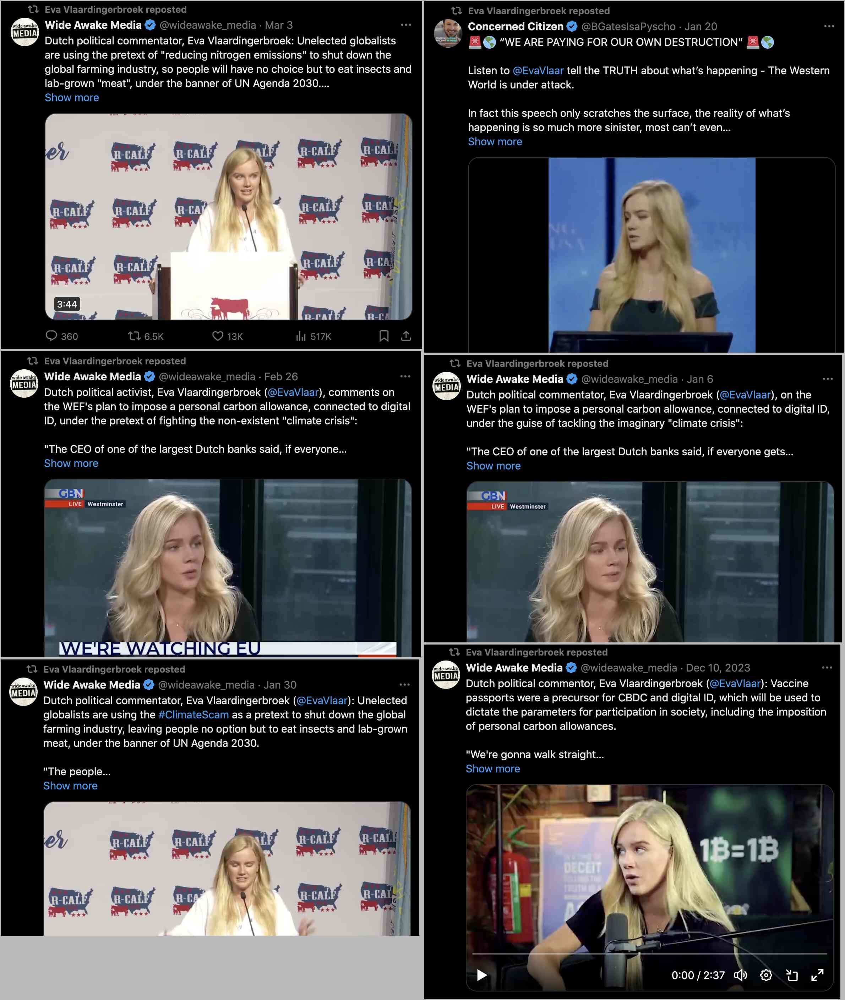
She has also quote tweeted illuminatibot and Concerned Citizen:
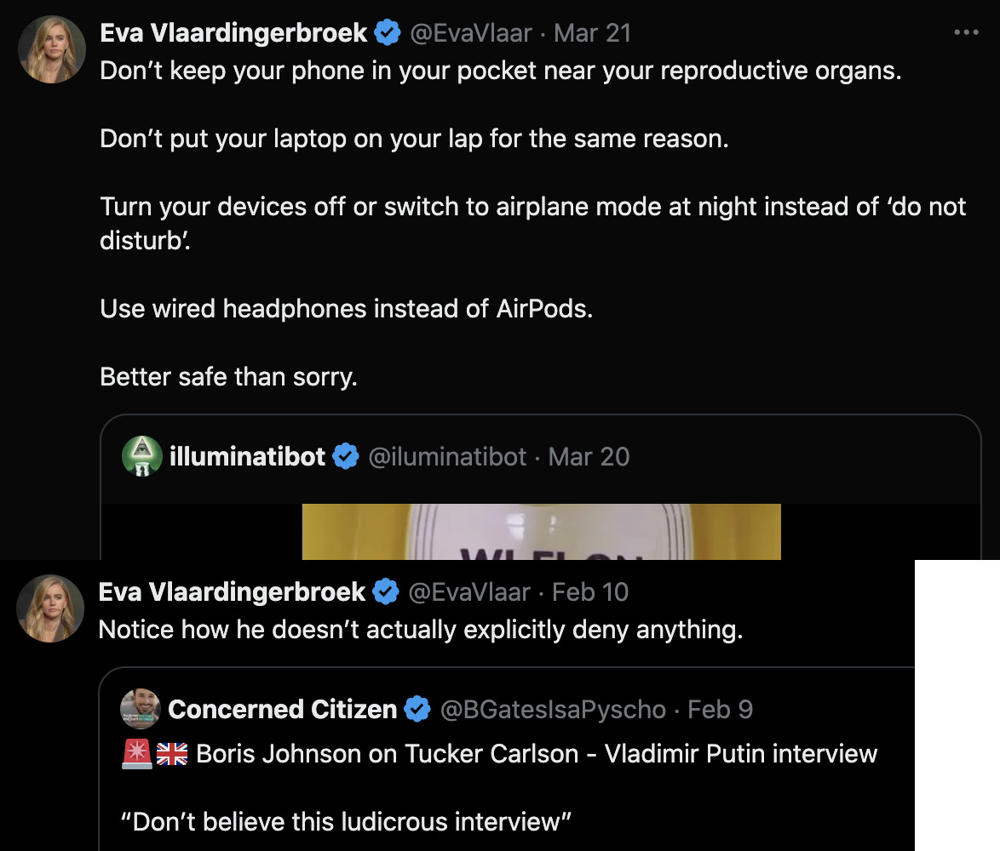
When I searched for lang:zh vlaardingerbroek, there were a total of 35 results out of which 13 quote tweeted a video of her, and 6 of the videos were posted by Wide Awake Media, 2 by illuminatibot, 2 by Wall Street Silver, one by Tucker Carlson, one by an account called ivan_8848, and one by her own account. Here this same video clip was posted by Wide Awake Media, illuminatibot, and Wall Street Silver, and even the text of the tweets was similar with only slight variations:
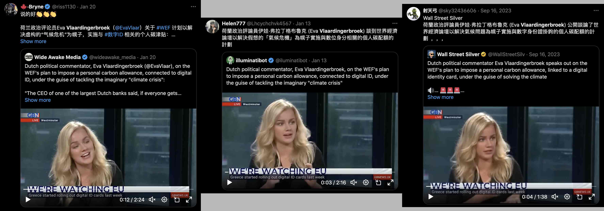
When I searched for a part of the text of the tweet in double quotes, I noticed that the same video had actually been posted at least 9 times by Wide Awake Media and 4 times by illuminatibot:
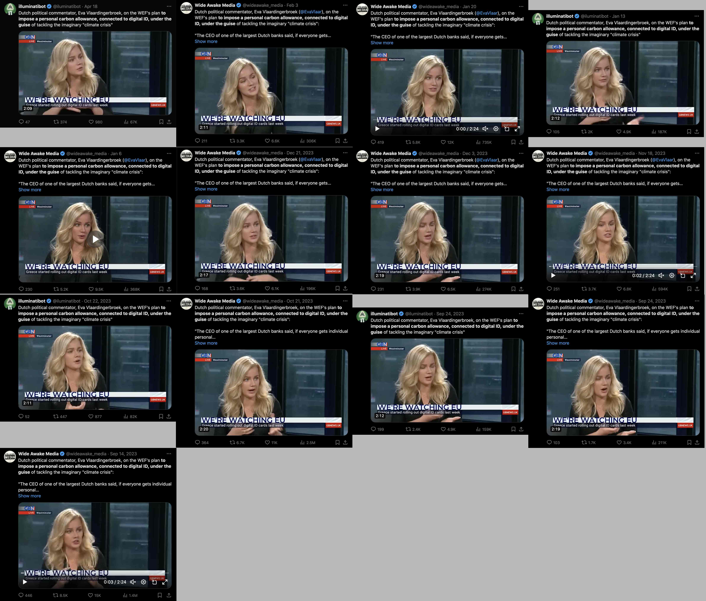
The same video was also posted by many other accounts. The bio of one of the accounts said that it was a "Semi - Automated 5th Generation Warfare Intelligence Mechanism", just like how the IlluminatiCoin bots are overtly presented as bots:
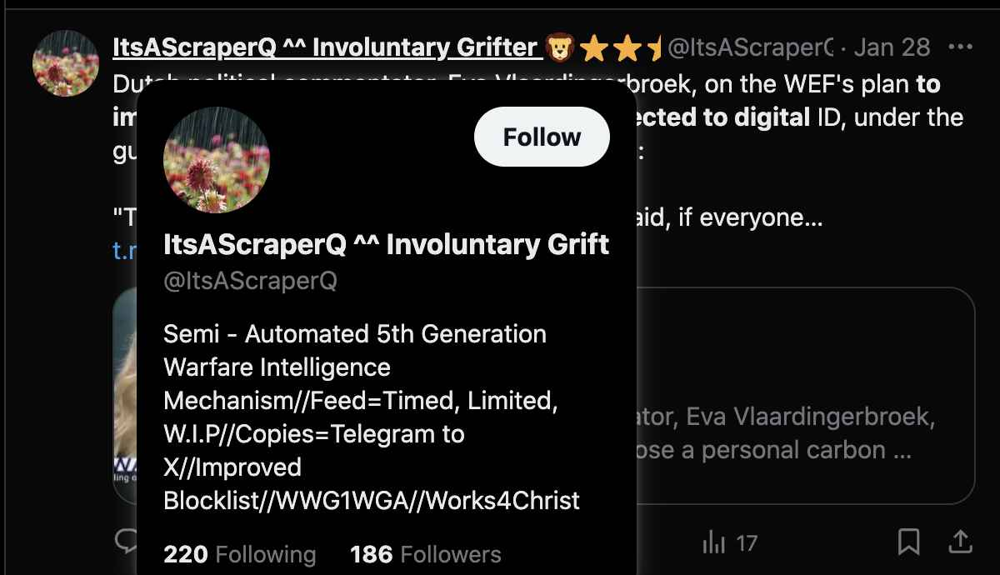
When I viewed the newest tweets by one of the Chinese accounts which posted a video of Vlaardingerboek, its two newest tweets were quote tweets of Peter Sweden and Peter McCullough, and after that there were also quote tweets of Vigilant Fox, illuminatibot, SpartaJustice, Mario Nawfal, Robin Monotti, Wide Awake Media, Jim Ferguson, and Liz Churchill:
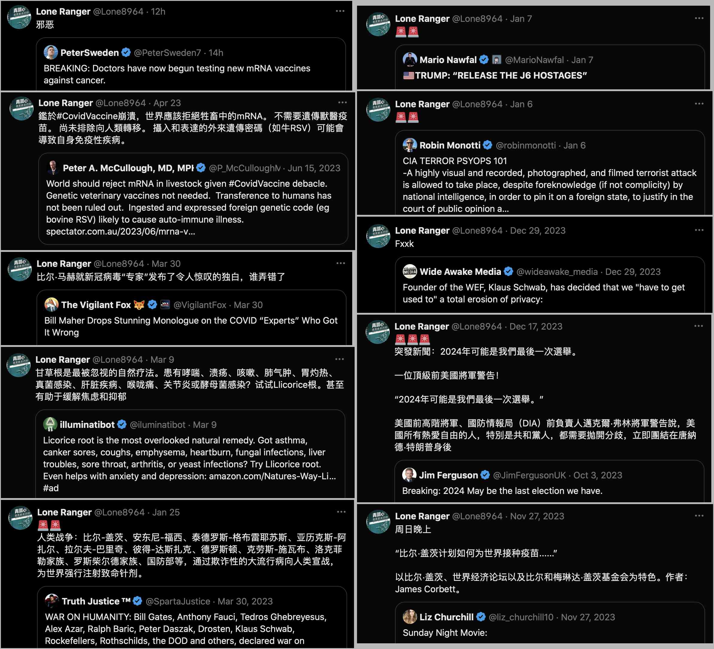
And when I viewed the newest tweets by another one of the Chinese accounts which posted a video of Vlaardingerboek, its newest tweets included quote tweets or retweets of Vigilant Fox, Concerned Citizen, Wide Awake Media, MJTruthUltra, Mario Nawfal, Truth Justice, Jim Ferguson, Wall Street Silver, Liz Churchill, Wall Street Apes, Peter Sweden, and illuminatibot:
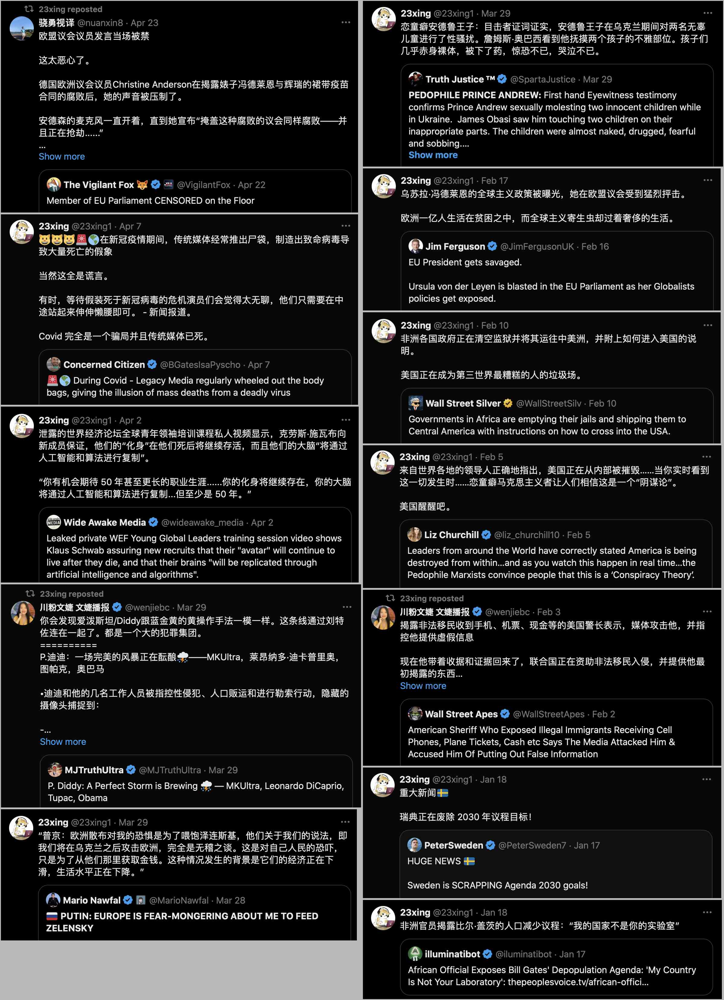
Guo bots often promote their own posts in the replies of popular accounts, where they quote tweet their own tweet so that text of the tweet only consist of one emoji, a single emoji repeated 2-3 times, or a few words of text. I noticed that a similar reply was posted to a tweet by Ed Dowd, but it promoted Epoch Times instead of Guo: [https://x.com/Jakub8632/status/1777884168803815560]
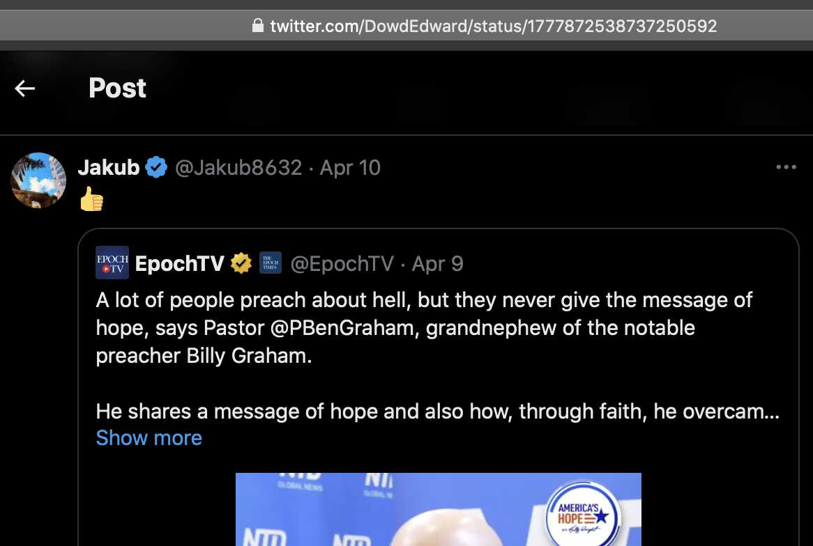
Here's other similar replies by the same account where it promoted content by Epoch Times or Falun Gong. (Shen Yun is a Falun Gong dance group.) The tweets were mostly replies to popular accounts like Tucker Carlson, J.K. Rowling, Don Lemon, and Ed Dowd:
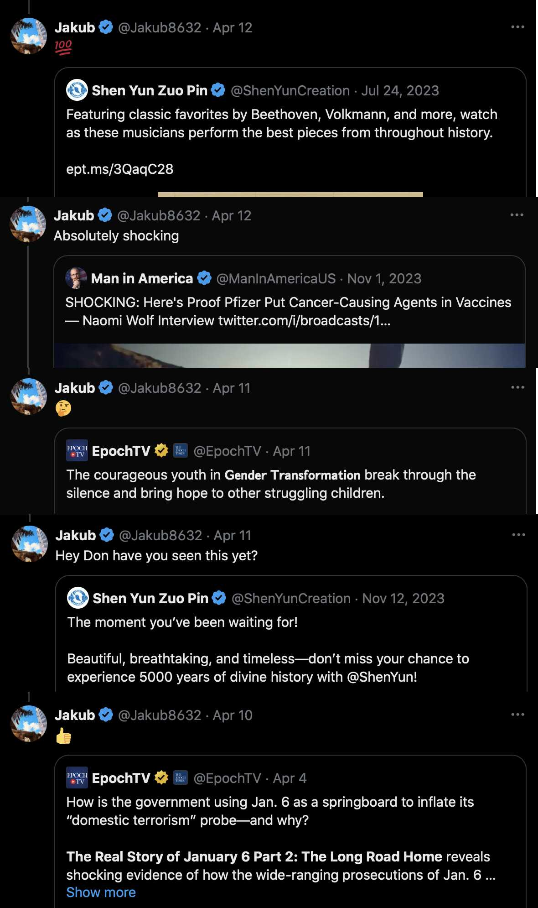
When I scrolled through the non-reply tweets by Jakub8632, the two newest tweets were retweets of Jan Jekielek, who is a senior editor of The Epoch Times and who hosts a show by Epoch Times called "American Thought Leaders". The third tweet was a retweet of Edge of Wonder, which is a conspiracy video show by Falun Gong (which has promoted Qanon and GAIA-style junk conspiracies about topics like ancient aliens). The next tweets were retweets of accounts called "Epoch Life", "Victims of Communism", and "Epoch Inspired", and a tweet by Mike Flynn where he promoted a documentary about himself that was published by Epoch Times:
After that the account also retweeted a post by TheChiefNerd who linked to an Epoch Times article, posts by different accounts of New Tang Dynasty which is ran by Falun Gong, the "Man in America" podcast by Seth Holehouse who works for Epoch Times, and so on.
I had to scroll down several pages until I saw the first two tweets that weren't retweets. One of them linked to some junk conspiracy video about time travel on YouTube, and the other linked to a probably equally factual story about how a practicioner of Falun Gong was being tortured in China:
Jakub8632 later updated its profile picture so now it looks like a portrait generated by AI or GAN. And its bio says that it's a supporter of Elon Musk and Mario Nawfal (which is one of the accounts that Elon Musk is always posting replies to and reposting):
Elon Musk has posted 11 replies to Mario Nawfal which only consist of an exclamation mark (https://x.com/search?q=from%3Aelonmusk+to%3Amarionawfal+%22!%22&f=live):
When I opened the URL of Jakub8632's profile picture, it showed an uncropped version that had a watermark for Adobe Firefly (which is a generative AI service): [http://web.archive.org/web/20240517161414/https://pbs.twimg.com/profile_images/1788929859621621760/OzQPT94%5f%5f400x400.jpg]
Jakub8632 also posts a lot of tweets like this were it asks questions from Grok:
Jakub8632 also retweeted two videos of Yuri Bezemenov:
I noticed this account because it promoted a tweet by Malcolm Roberts in a reply to Ethical Skeptic (which is one of the acccounts that is popular enough that its replies are full of bots): [https://x.com/antoinett3r/status/1778401605408510340]
Among the 10 newest non-reply tweets by the account, there were quote tweets of BGatesIsaPyscho, Wide Awake Media, Malcolm Roberts, Simon Goddek, and Vigilant Fox:
About three pages further down it also quote tweeted 4 tweets by Peter Sweden in a row.
Almost all tweets by antoinett3r were quote tweets, and even its replies were usually quote tweets of video clips like this:
The IlluminatiCoin bots posted several tweets of this video where Carrie Madej told Stew Peters that COVID vaccines contain hydras:
The two oldest tweets which consisted of the same text and same video were posted by accounts which were portrayed as real people (grantltaylor and catranchderam): [https://x.com/search?q=%22self-assembling+structures+with+tentacles+in%22&f=live]
When I checked the account catranchdream in the screenshot above and I scrolled through several pages of its latest non-reply tweets, almost all of them were retweets. They included tweets of zeee_media, Wall Street Silver, Wall Street Apes, Jack Straw, TheChiefNerd, iluminatibot, Dr. Kek, BGatesIsaPyscho, MJTruthUltra, KanekoaTheGreat, Robin Monotti, Peter Sweden, and so on:
When I checked the first account which had posted the Carrie Madej video, I noticed that it had been quote tweeted by Alex Jones: [https://x.com/RealAlexJones/status/1776850397946335715]
Alex Jones frequently quote tweets or retweets the illuminati bots. For example these tweets were all posted within a week:
From 2019 until February 2022, the catranchdream account posted a large number of tweets about free giveaways like this (which a real person might do occasionally if it was a condition for applying to the giveaway, but this account posted about several different giveaways within a single week): [https://x.com/search?q=from%3Acatranchdream+until%3A2019-12-1&src=typed_query&f=live]
The account is connected to an Instagram account which has a profile picture of the same person and which also promoted free giveaways. [https://www.instagram.com/lovegettingmail/]
Almost all of the earliest tweets about conspiracy topics by catranchdream were images or videos with no text. But when I searched for the text of one of the rare tweets which also included text, I noticed that the identical tweet had been posted earlier by another account which also pretended to be Canadian:
A similar tweet was also posted by an account which posted in Japanese and whose bio said in Japanese: "From the 2022 Canadian Freedom Convoy. Stay united. Honk your horns loudly and let out a battle cry!" (The European farmer protests in 2023-2024 were heavily promoted by these bots so I guess the Canadian trucker protests were about equally grassroots.)
This was the second early tweet by catranchdream I saw which also included text, but when I searched for it I noticed that it had also been posted by anothe account which linked to Gettr:
Other tweets by catranchdream had also been posted to Gettr by different accounts (which is not surprising because Gettr is controlled by Miles Guo, and these bots seem to follow a similar formula as the Guo bots, and Guo's bots are always also posting links to Gettr):
Some real user posted a screenshot of this tweet by iluminatibot:
When I searched for the text of the tweet in double quotes, I found that the tweet had been posted a total of 5 times: two times by iluminatibot, one time by thehealthb0t, and two times by an account called Vital_Vibration:
When I scrolled through the timeline of Vital_Vibration, the first tweet was a retweet of Wall Street Silver, the 9th and 10th tweets were retweets of tweets by other users who quote tweeted a reply by Vital_Vibration to BGatesIsaPyscho, 12th tweet was a retweet of BGatesIsaPyscho, the 13th tweet was a retweet of BGatesIsaPyscho, the 15th tweet was a retweet of a quote tweet of a reply to iluminatibot, the 16th tweet was a retweet of a quote tweet of a reply to Peter Sweden, the 19th tweet was a retweet of a quote tweet of a reply to BGatesIsAPyscho, the 23rd tweet was a retweet of Peter Sweden, the 24th tweet was a quote tweet of Wide Awake Media, the 26th tweet was a retweet of a reply to iluminatibot, the 29th tweet was a retweet of a quote tweet of a reply to iluminatibot, the 31st tweet was a quote tweet of VigilantFox. The Vital_Vibration bot also retweeted Alex Jones multiple times (but the IlluminatiCoin bots were also promoting the Great Reset book by Alex Jones, and Alex Jones often quote tweets the IlluminatiCoin bots).
Dr. KEK often justifies lines of text by putting spaces within words, like for example the line DO YOU followed by the line K N O W. So when I searched for "DO YOU" "K N O W", I found these two tweets by the account of a real person called Mitchell Gerber who formatted his tweets in a similar way as DR. Kek. Both of the tweets were clips of videos from TikTok like many of DR. Kek's tweets:
The pinned tweet and profile of Mitchell Gerber link to a website by Falun Gong called stoporganharvesting.org:
One of the most recent tweets by Mitchell Gerber was a quote tweet of a Qtard tweet by Jack Straw:
Mitchell Gerber also posted a video about adrenochrome by Robert David Steele and wrote "It was an Honor to meet Mr. Steele in 2018, with my coalition in a Child trafficking tribunal in London."
He also quoted a tweet by Died Suddenly and he posted a clip of his appearance on Stew Peters (but even that tweet was formatted in a similar style as tweets by DR. Kek, so maybe he was just manually copying DR. Kek's writing style):
Mitchell Gerber has 45 tweets posted before 2023, but 43 of them are about organ harvesting of Falun Gong members. After he started tweeting again in 2023, his first tweet linked to a TV series by Epoch Times:
After he started posting more actively in 2023, one of his first tweets was a video clip of his interview about organ harvesting with Steve Bannon (and a bit later he also posted videos of his interviews with ITNJ, InfoWars, Diamond and Silk, and Mel K):
So since Mitchell Gerber's account seems like the account of a real person, but maybe he was just copying DR. Kek's writing style, or maybe his account is a human-bot hybrid similar to how DR. Kek does Twitter spaces even though some of his tweets seem to be automated.
When I searched for the phrase "DO YOU" "K N O W", I also found this tweet by an account called PlaugedReality:
At first I thought the account may have just been copying DR. Kek, but the content of its tweets also seems to be very similar to DR. Kek, like for example this tweet where it asked if giants existed and posted a TikTok video of AI-generated images of dinosaur remains:
PlaugedReality also posted videos by InfoWars and ITNJ, like how Mitchell Gerber had been interviewed by both InfoWars and ITNJ:
Here PlaugedReality posted the video of a Greg Reese report, and it had the good sense to not just take content from InfoWars for free and give nothing in return, so he followed it up with an advertisement for a CBD product from InfoWars Store:
The three earliest tweets by PlaugedReality were replies to Illuminatibot and ronin19207435: [https://x.com/search?q=from%3Aplaugedreality+until%3A2023-10-10&f=live]
About half of the earliest tweets by PlaugedReality were replies to either Illuminatibot or DR. Kek. Its second-oldest non-reply tweet was a quote tweet of Concerned Citizen, and after that its next two tweets were replies to illuminatibot:
Here it replied to two IlluminatiCoin bots, DR. Kek, and Concerned Citizen:
Other accounts which PlaugedReality often replied to were ornery_owls and TheFlatEartherr, so they might be part of this same network of accounts that are boosted by bots. ornery_owls has also posted hundreds of replies to illuminatibot (or maybe even over a thousand replies, but I can't check the exact number because I no longer have access to the Twitter API). [https://x.com/search?q=from%3Aornery_owls%20%40iluminatibot&f=live] When I searched for from:iluminatibot to:ornery_owls, I found only one tweet where illuminatibot replied back to her, which also showed that she was a paid subscriber to Illuminatibot:
The tweets by DR. Kek often have spaces inserted between characters so that the lines look justified. So when I searched for the text "do you" "s t i l l" copied from one of his tweets, I found an account called Grok_Parody1 which had copied a tweet by DR. Kek (so it's not necessarily a bot which is ran by the same program as DR. Kek but it might just be a bot which copies tweets from other users):
Most of the newest tweets by Grok_Parody1 were tweets like this great Elon Musk and his companies were (so I wonder why Elon doesn't crack down on these bots):
The 50 newest tweets by Grok_Parody1 included videos that were copied from these accounts so that the account was linked as the source below the tweet: Andrew Tate, Aussie Cossack, CCTV Idiots, Catholic Arena, Censored Men, Concerned Citizen, DogeDesigner, Mario Nawfal, Rosy, Valuetainment Media, and Visegrád 24.
When I searched for the text of tweets by Grok_Parody1 in double quotes, I found that many tweets had also been posted by accounts called DogeDesigner or ElonMuskAOC, which are popular Elon Musk fan accounts. For example the same text which was included in this tweet by Grok_Parody1 was also included in two tweets by DogeDesigner, but each three tweets were accompanied by a different image (and tweets with the same text had also been posted by Elon Musk fan accounts called PageElon66, Teslainvestment, and SexiestMemeKing):
This tweet was first posted by ElonMuskAOC and later copied by GrokParody1 and PageElon66:
Even a text-only tweet by ElonMuskAOC was copied by PageElon66:
ElonMuskAOC has an icon of Wall Street Silver next to the verified checkmark, and it's always retweeting Wall Street Silver. So I think it further increases the likelihood that Twitter's management is complicit in running the botnet which promotes accounts like Wall Street Silver.
PageElon66 often asks random questions from its followers similar to DR. Kek:
Similar random questions are also asked by other Elon Musk fan bots:
Other bots which have posted identical tweets to PageElon66 include MuskElon2570, MuskElonreal_1, Kalu1430162, and pluto_elonmusk, which all have the display name "Elon Reeve Musk", and an account called iamnot_elon with the display name "Not Elon Musk". [https://x.com/search?q=%22Now+I+know+what+it+feels+like+to+be+held+as+an+uncharged+enemy+combatant+at+Guantanamo+Bay+with+no+due+process%22&f=live, https://x.com/search?q=%22Check+out+this+new+billboard+on+the+Pacific+Coast+Highway%21+%28Re%3A+Creator+Revenue+Share+Program%29%22&f=live]
(However some of these Elon Musk bots seem fairly unsophisticated compared to accounts like the IlluminatiCoin bots, so it could be that these bots were just created by some Pajeet to make money or something. Because it wouldn't seem like a good PR strategy for Elon to run such obvious bot accounts himself. But on the other hand the big accounts like DogeDesigner and ElonMuskAOC might actually be ran by intel in order to create a personality cult around Elon, similar to all the Miles Guo bots.)
I found this account by searching for a combination of the terms illuminatibot and DR. Kek, because it told people to follow DR. Kek, illuminatibot, and Liz Churchill:
From December 2023 onwards almost all tweets by the account promoted different cryptocurrencies, NFTs, or Web3 projects:
But before that the account seemed to follow a different formula, where it rarely posted about cryptocurrencies but instead it retweeted accounts like healthbot, DiedSuddenly, illuminatibot, Vigilant Fox, Robin Monotti, bambkb, Liz Churchill, Wide Awake Media, Jack Straw, Vigilant News, DR. Kek, and Truth Justice:
The WallStreetApes and bambkb accounts were promoting cryptocurrencies before they started posting about conspiracy topics, but this Wendytartar account seems to have followed the opposite pattern.
The first two tweets by the account advertised some VPN product and a stock trading software, and the next three tweets advertised some other VPN product:
The same bot also posted these text-only tweets where it promoted Ariana Love, William Makis, Steve Quayle, Stew Peters, and Mike Adams, it promoed the Died Suddenly film about the kalamari clots, and it promoted a protocol by Mike Adams for dissolving the clots:
Jane Ruby brags that in January 2022 she was the first person who broke the news about the white kalamari clots that were supposedly seen by embalmers. [https://x.com/RealDrJaneRuby/status/1619624953036558338] However in 2021 before the story about the kalamari clots had been rolled out, two precursors of the story were that La Quinta Columna was saying that vaccinated women had black period blood with black clots, and Carrie Madej was saying that a vaccinated girl had a bright red clot with hydra-like tentacles. In 2021 Carrie Madej did an interview with Stew Peters where she showed the photo below which according to Ariana Love showed "a blood clot with Hydra-like mutational growth that was removed from the heart of an early teen who received a Covid vaxx", but actually it was a photo of a bronchial cast from 2018: [https://ambassadorlove.blog/2021/11/01/transgenic-hydras-parasites-a-biological-weapons-system-for-rapid-human-cloning/, https://www.empr.com/home/news/heart-failure-patient-coughs-up-bronchial-tree-shaped-blood-clot/]
William Makis is another person who seems to be frequently promoted by these bots, but I haven't paid much attention to him because I didn't know who he was before I started researching these bots. But he seems to be posting about topics like turbo cancer and people who died suddenly. Before Wendytartar started posting about cryptocurrencies, about 20% of its tweets were retweets of William Makis:
In one tweet in 2017, Wendytartar posted its Ripple address and wrote: "Pls send me some ripple. I have none." But when I searched for the address, a huge number of other accounts had also claimed it was their Ripple address: [https://x.com/search?q=rPVMhWBsfF9iMXYj3aAzJVkPDTFNSyWdKy%20until%3A2017-7-30&src=typed_query&f=live]
I looked up a random account which had posted the same Ripple address, which was rahesi_14. Almost all of its non-reply tweets were retweets, even though it also posted on average about one reply per day. The account posted in Spanish, but these were all non-Spanish accounts it had reposted at least 3 times (up to the point when the infinite scrolling stopped loading more tweets):
9 PeterSweden7 7 iluminatibot 4 goddeketal (Simon Goddek) 4 MattWallace888 (Elon Musk fan Rumble influencer) 4 BGatesIsaPyscho (Concerned Citizen) 3 liz_churchill10 3 elonmusk 3 disclosetv 3 RadioGenoa
It had also reposted Jim Ferguson, Peter McCullough, Vigilant Fox, Visegrád 24, and redpillb0t:
Liz Gunn is the head of the NZ Loyal political party, and in November 2023 she did a viral interview with the database administrator Barry Young who released a set of vaccination data which was published by Steve Kirsch. She used to be the host of a show on mainstream TV like Stew Peters, and people were saying immediately that her interview with Barry Young stank like a Stew Peters operation.
When I scrolled through her most recent tweets, most of them were retweets, and she had retweeted accounts like iluminatibot, thehealthb0t, naticoineth, redpillb0t, Thekeksociety, BGatesIsaPyscho, wolsned, and bambkb:
She also retweeted several video clips from Vigilant Fox, Wide Awake Media, and Wall Street Apes, which are all accounts that primarily post video clips and that are frequently reposted by the illuminati bots.
So it might be that her account is a hybrid between a manually ran account and a bot, or that for example her retweets are mostly done by a bot but she writes other tweets herself.
Thekeksociety also promoted a video by Liz Gunn about Barry Young's vaccine data:

Miles Guo's bots were also promoting Barry Young's story: [https://x.com/search?q=lang%3Azh+barry+young&f=live]

I also noticed that there's a certain set of users who appear on Twitter using their full name and their own photo but who were frequently retweeted by both Liz Gunn and bot accounts. For example the screenshots below show that both a Chinese bot and Liz Gunn had recently retweeted Andrew Bridgen, Jim Ferguson, Simon Goddek, Craig Kelly, Aseem Malhotra, Robert Monotti, Malcolm Roberts, Peter Sweden, and Eva Vlaardingerbroek:
When I searched Twitter for early tweets about Barry Young so that top tweets were shown first, there was a huge number of tweets by accounts that are promoted by bots, like Liz Churchill, DD Denslow, MJTruthUltra, Vigilant Fox, Craig Kelly, and Jim Ferguson: [https://x.com/search?q=barry+young+until%3A2023-12-5]
Here a Japanese bot posted a translation of Maria Zeee's tweet about Barry Young: [https://x.com/shelbyzt268/status/1731619543808926004]
Later when I checked Liz Gunn's tweets again, during a single day she had retweeted or quote tweeted Truth Justice, Liz Churchill, healthbot, Stew Peters, Wall Street Apes, Wall Street Silver, Concerned Citizen, illuminatibot, Jan Jekielek from Epoch Times, DD Denslow, redpillbot, Vigilant Fox, Wide Awake Media, and bambkb (and she actually retweeted three different tweets by illuminatibot the same day):
I don't yet have good evidence yet if Liz Gunn's retweets are automated or not. An alternative explanation why she retweets accounts that are retweeted by bots might be if she simply retweets posts that are shown in the "For you" feed, because it also seems to recommend tweets by accounts like illuminatibot.
Jikkyleaks retweeted a tweet by DrWoofAus, who quote tweeted a video by Wide Awake Media that was posted by iluminatibot:
I told Jikky about how Wide Awake Media is heavily promoted by the same kind of accounts that promote the IlluminatiCoin bots and Vigilant Fox. The display name of DrWoofAus featured both Jikky's mouse emoji and Vigilant Fox's fox emoji, so I asked DrWoofAus if he was not aware of Kristin Elizabeth's research into The Welness Company, and I also linked to Amazing Polly's video about TWC. And I asked if VNN was for real then why the heck would they hire Maria Zeee as their talking head. However I didn't get either Jikky or DrWoofAus said anything negative about Vigilant Fox or the IlluminatiCoin bots, but Jikky just told me: "Lol for someone who thinks they are 'fighting ConOps' you got that as wrong as anyone could possibly get." [https://x.com/henjin256/status/1781356545168572579] And DrWoofAus told said this about me: "If he's genuine and not a kaos agent, he's very lost. Stop listening to Pollys nonsense would be a good start." However I told them that I have only seen a handful of videos by Polly because I don't trust former Qtards like her, and that I don't trust Jikky either because he's a former Qtard and his avatar image at Gab still says "WHERE WE GO ONE, WE GO ALL". And I said that it's possible that Amazing Polly was sent in to infiltrate Kristin Elizabeth's investigation into TWC. But I still didn't get any of the users with a mouse emoji to say anything negative about TWC or VNN but only Polly.
Here during the same day Dr Woof quote tweeted iluminatibot twice, and he also retweeted Maria Zee, Vigilant News, and Vigilant Fox:
When I first saw how Vigilant Fox was using the fox emoji which was similar to Jikky's mouse emoji, I thought that the kind of spooks who were producing Stew Peters and InfoWars had seen the success of Jikky's mouse brand, so they came up with the idea to copy his formula of an anonymous animal character complete with their own emoji. Dr. Woof also has a similar cute animal branding but it might be a coincidence. (And in fact Vigilant Fox started tweeting before Jikky's original mouse account jikkykjj, even though I don't know if Vigilant Fox started using the fox emoji before Jikky started using the mouse emoji.)
Dr. Woof has posted over 70 replies to iluminatibot even though it's an obvious bot account. [https://x.com/search?q=from%3Adrwoofaus+%40iluminatibot&f=live] He has has also posted 8 replies that tagged only Dr. Kek and no other users (so he wasn't even replying to some other user who was replying to Dr. Kek): [https://x.com/search?q=from%3Adrwoofaus+%40thekeksociety&f=live]
Ellenng2013 mainly posts retweets. Its own tweets are mostly in Chinese, but it also has some random tweets in other languages French or Italian (which is also typical of the Guo bots, even though this account seems to be one of the bots which is portrayed as a Chinese account but which doesn't promote Guo):

When I scrolled through a few dozen of the newest tweets by Ellenng2013, I found retweets of Thekeksociety, bambkb, WideAwakeMedia, thehealthb0t, iluminatibot, ShadowOfEzra, KanekoaTheGreat, BGatesIsaPsycho, and redpillb0t (which are very similar to the set of accounts that are being retweeted by Liz Gunn):

The same bot also promotes flat earthers:
Here the bot posted a video by Wide Awake Media about kalamari clots: [https://x.com/Ellenng2013/status/1768276909618798863]
Here the bot reposted a video about flat earth by Thekeksociety: [https://x.com/Ellenng2013/status/1767638650316337491]
Here the account posted a video clip which had watermarks of both Himalaya Supervisory Organization and VigilantFox:
The Ellenng2013 account was created in 2013, but it only has two tweets before 2020, and its first tweets in 2020 are replies to Trump:
A bot called chunhuidadi mostly posts in Chinese even though it has no or almost no tweets about Guo. It mostly posts retweets, but its most recent tweets included retweets of IlluminatiCoin, wolsned, SpartaJustice, Jack Straw, bambkb, and ShadowOfEzra:
I don't know if some of these Chinese bots are ran from Australia, because the profile picture of many of Miles Guo's bots is an emblem of the Australian branch of the Himalaya Supervisory Organization. And even though the chunhuidadi bot doesn't post about Guo, it frequently posts about Australian topics and it frequently retweets Australian politicians like Malcolm Roberts and Craig Kelly:

When I looked at Craig Kelly's most recent tweets, I noticed that he posted a large number of quote tweets of tweets by the usual suspects (even including IlluminatiCoin):

Here chunhuidadi posted a video by BAM! (Belgian Alternative Media) with subtitles in French that also had a watermark of Wide Awake Media:
The account that was retweeted in the screenshot above is called kevinhung2, which is another account which posts in Chinese but which doesn't post about Guo. However when I scrolled down its timeline for a few pages, it had quote tweeted several tweets by the usual suspects, like Peter Sweden, BGatesIsaPyscho, wideawake_media, iluminatibot, Robin Monotti, and redpillb0t:
The account of kevinhung2 was created in 2009. In 2010 nearly all of its tweets were reposted from a Chinese microblogging site called Plurk. There's only 4 tweets from 2011-2013, and in 2014 there's only 4 tweets which all advertise sunglasses. [https://x.com/search?q=from%3Akevinhung2+until%3A2015-1-1&f=live]
This is a random Chinese bot I found by searching for Chinese-language tweets about Andrew Bridgen.
Its most recent tweets were full of retweets or quote tweets of the usual suspects, including Peter Sweden, Shadow of Ezra, Concerned Citizen, Jack Straw, Jim Ferguson, Wall Street Silver, Liz Churchill, and Dr. Kek:
It also retweeted Barry Young, and it retweeted or quote tweeted several tweets by Aussie17 who posted an early highlight video of Liz Gunn's interview with Barry Young:
It also promoted Epoch Times, Stew Peters, and Maria Zeee:
When I searched for the oldest tweets by the account, its two earliest tweets were English-language replies to Trump and Biden (because somehow there seems to be a huge number of these Chinese Twitter users who are interested in American politics):
When I searched for lang:ja andrew bridgen, the newest result was a tweet posted by a bot called Hanakohanako201. When I scrolled through a few pages of its most recent tweets, they included quote tweets of illuminatibot, DD Denslow, Shadow of Ezra, Concerned Citizen, Jack Straw, and MJTruthUltra:
It also frequently retweeted accounts called BRICS News and Insider Paper which are also retweeted by many bots which post in Chinese:
When I searched for lang:ko "andrew bridgen", there were a total of 5 results out of which one was a tweet posted by an account that promoted Raelianism in Korean. Another tweet was posted by account called Hanaro777, but its newst tweet was a retweet of Liz Churchill and its second-newest tweet was a quote tweet of Wide Awake Media. After that it retweeted or quote tweeted the same kind of accounts that are posted by other bots, like Oli London, bambkb, DogeDesigner, Concerned Citizen, RadioGenoa, illuminatibot, Wall Street Silver, Visegrád 24, Peter Sweden, Jim Ferguson, Wall Street Apes, McCullough Foundation, DD Denslow, aussie17, and Vigilant Fox:
The same bot also promoted Voice Of America and The Select Committee on the Chinese Communist Party:
The first three tweets by Hanaro7777 all said this in Korean: "Breaking news!!! The U.S. government officially notifies the Chinese Communist government of the withdrawal of the U.S. Embassy in Beijing! - GNEWS". (GNEWS is Miles Guo's news site.)
In February 2022 the same bot posted multiple tweets in a row which were translations of Chinese tweets to Ukrainian:
When I searched for lang:ko Vlaardingerbroek, there were only 7 results. Two of the tweets were posted by an account called Raelian Amor, and they were quote tweets of a video by Wide Awake Media:
Here within a single week Raelian Amor quote tweeted videos of Barry Young's interview with Liz Gunn that were posted by Vigilant Fox and Kim Dotcom, it posted a screenshot of Kirsch's Substack post about Barry's data, and it also quote tweeted Vigilant Fox, Wide Awake Media, Robin Monotti, Radio Genoa, DiedSuddenly, and illuminatibot: [https://x.com/amor8156/status/1731816751867064460]
The same Raelian account also posted a video of a speech by Andrew Bridgen:
Twitter's search returned no original tweets by Raelian Amor from 2014, 2016, 2018, 2019, or 2020. [https://x.com/search?q=from%3Aamor8156%20until%3A2022-12-1&f=live] The only tweets from 2015 were 4 tweets about some sports website that were all posted within a 5 second timespan. In 2021 th eonly tweet was a link to a video about vaccine protests:
In 2022 Raelian Amor account had only 2 tweets that were returned by Twitter's search, which were about how Elon Musk had posted the Raelian symbol on Twitter and a link to the Raelian website proswastika.org (which actually seemed like real tweets that a Raelian account might post). But the account only started posting actively in May 2023, when it started following a similar formula as other Raelian bots.
When I searched for lang:ko "andrew bridgen", there were only 4 results apart from the video by the Raelian account, but one of them was a quote tweet of Wide Awake Media and the other was a quote tweet of Jim Ferguson:
When I searched for Japanese bots that posted about Raelianism, the first account I found was called Elohim's crow. Nearly all of its most recent tweets were about Raelianism, but its fifth-newest tweet was still a retweet of a reply to Wide Awake Media:
Nobby Raelian is a bot that posts about Raelianism in Japanese. About 90% of its most recent tweets were about Raelianism, but among the other tweets there were quote tweets or retweets of BRICS News, illuminatibot, Concerned Citizen, Stew Peters, Mario Nawfal, Epoch Times, healthbot, Vigilant Fox, KanekoaTheGreat, Jim Ferguson, and Wide Awake Media:
It also quoted this video that was posted by thehealthb0t, where Mike Adams was looking at kalamari clots under a microscope on InfoWars:
Another common pattern I noticed among this bot and other Raelian bots was that they were promoting Assange (but a couple of years ago I also noticed that Assange was always being promoted by Twitter bots which were advocating for separatist movements among Russian minority peoples):
When I searched for lang:th raelian, I found an account called Thai Raelian Movement, which posts the same kind of images as the other Raelian bots but translated to Thai. Many of its tweets had only 0-3 views before I viewed them.
The account had a total of 408 tweets which were almost all about either Raelianism or nudism (which seems to be popular among Raelians). But out of maybe 10 tweets about other topics, there were retweets of VigilantFox, Concerned Citizen, and Robin Monotti, and there was a video about COVID vaccines by Epoch Times that was posted by another Raelian bot:
The Thai Raelian bot also retweeted this image about how Maitreya Rael wanted to build an embassy for the aliens together with Elon Musk:
The perpetual unfulfilled goal of the Raelian movement has been to build an embassy in Israel, in the same way how the mission of the Jews is to build the Third Temple. [https://books.google.com/books?id=gmCCxUJGi70C&pg=PA80] Rael says that he is the illegitimate son of a Jew, and the number two guy in Raelianism is their Chief Rabbi Leon Mellul who is a Sephardic Jew from Morocco. According to the messenger of the Elohim who contacted Rael, there are innumerable planets that are populated by human-like beings but their planet was the most advanced, and the language they spoke on their planet closely resembled Ancient Hebrew. [https://www.rael.org/wp-content/uploads/2022/04/Intelligent_Design_ENGLISH.pdf] According to Rael's book Intelligent Design, the messenger of the Elohim told him that different races of humans were created by different teams of aliens, but Jews were created by the most brilliant team so they ended up becoming smarter than other humans: "The team located in the country you now call Israel, which at the time was not far from Greece and Turkey on the original continent, was composed of brilliant creators who were perhaps the most talented team of all. Their animals were the most beautiful and their plants had the sweetest perfumes. This was what you call 'paradise on Earth'. The human beings they created there were the most intelligent." [ibid.] The messenger of the Elohim also revealed that the Tower of Babel was a rocket that was built by the Jews because they were so smart: "But the most intelligent race, the people of Israel, was making such remarkable progress that they were soon able to undertake the conquest of space with the help of the exiled creators. The latter wanted their new human beings to go to the creators' planet to obtain their pardon, by showing that they were not only intelligent and scientific but also grateful and peaceful. So they built an enormous rocket - The Tower of Babel." The messenger of the Elohim also said that the snake was the good guy who was trying to free humanity from ignorance, and he said: "The Kabala is the closest book to the truth, but almost all religious books allude to us with varying degrees of clarity." The messenger of the Elohim also told Rael that Jews have the blood of a superior alien race: "The people who were chosen by our creators, the Elohim, as being the most accomplished, were the people of Israel, who had been created in a laboratory at this location on our planet. It is perhaps because these people were the greatest success that the Sons of the Elohim were tempted by their females and had children by them, from whom the Jewish people descend. That is how the race populating the soil of Israel became the Jewish people."
A Raelian bot called Marek Bačák posts in English, even though the name Bačák is the most common in Czechia. It often retweeted the Japanese bots Elohim's crow and Nobby Raelian, the Chinese bot Yue Raelian, or the Korean bot Raelian Amor, even though many of their tweets weren't even in English.
However this bot posted more about non-Raelian topics than the East Asian Raelian bots, so I only had to scroll a few pages to see retweets of Eva Vlaardingerbroek, Wall Street Silver, Concerned Citizen, Vigilant Fox, Robin Monotti, illuminatibot, and redpillbot:
BacakMarek retweeted this tweet which was formatted in a similar way as tweets by DR. Kek:
The same account called truthtroll_X also posted similar TikTok videos as DR. Kek (and Mitchell Gerber whose tweets are also formatted in a similar way):
BacakMarek also posted these quotations where Rael Maitreya said that his ideology was a natural evolution of communism except the proletariat would be replaced by robots (so I don't know what they will do with regular poor folks like me who will no longer be needed):
This is another Raelian bot which posts more about non-Raelian topics than the East Asian bots, so within the past two days it had retweeted the IlluminatiCoin bots 9 times, BRICS News twice, and Concerned Citizen once:
Even though this bot was supposed to be Italian, it also randomly retweeted other Raelian bots that posted in Japanese, Korean, and Chinese. Miles Guo's bots often also retweet other Guo bots that post in languages that their human followers would not be likely to understand.
This bot also promoted Assange like the other Raelian bots:
The main PR guy for Assange was Trevor Fitzgibbon, who now does PR for Kirsch and VSRF, and who was listed as the "managing director" of RFK's American Values 24 PAC as of December 2023. [https://www.linkedin.com/in/trevor-fitzgibbon-b7b000126/, https://www.prnewswire.com/news-releases/av24-the-super-pac-supporting-robert-f-kennedy-jrs-surging-candidacy-to-spend-between-10m%2d%2d%2d15m-to-pursue-ballot-access-in-ten-pivotal-states-302006018.html] Fitzgibbon was also the PR guy for the ShadowBox company, whose primary service was to troll and harrass the enemies of their clients online. ShadowBox was founded by Thomas Schoenberger and Defango from Cicada 3301. Before the first Q puzzle had been published, Schoenberger published a Cicada puzzle which featured an audio file called Q.mp3. [https://www.youtube.com/watch?v=64CBZbzgbwI] Defango claimed to be Q in a DefCon hacker conference, and one time he tweeted a photo of an IARPA certificate he had received. [https://burners.me/2019/10/24/larp-wars-part-3-shadowbox/] In an email where Schoenberger introduced Fitzgibbon to Cicada, he wrote that Cicada 3301 had "a team of ex intel guys like Lara's hubby as well". [https://daniel-ed-morrison.medium.com/evidence-of-the-people-responsible-for-qanon-being-responsible-for-qanon-779c357da8ae] Steve Outtrim published a blog post where he wrote: "It has now come out that Cicada 3301 was founded by Bruce C. Clarke, Jr. the former head of the CIA's research division, and co-founder Thomas Schoenberger previously worked for the Pentagon, possibly on remote viewing projects such as STARGATE or GRILL FLAME", but Schoenberger posted a comment to the blog post where he didn't say he hadn't worked for the Pentagon but he just wrote "Excellent work." [https://burners.me/2019/06/22/latest-weapon-in-the-infowar-data-maps/]
In the year 2015 the Raelian Movement started a website called elohimleaks.com, where Maitreya Rael released "most recent information from the Elohim about what's happening in Earth's most secret government services". The website featured a total of 8 revelations about topics like secret underground bases, that there was a plot to release a race-specific bioweapon that would kill all people who were not Jewish or white, that Israel was planning to poison the water supply in Palestine, and that Israel was preparing a false flag where it would attack US ships and blame it on Iran. (Which reminded me of all the predictions that Benjamin Fulford has made over the years based on his intel from unnamed sources.) [https://www.elohimleaks.org/]
It might be a coincidence, but itt's interesting that Assange was raised in a neo-Theosophy cult as a kid, and Raelianism also has a lot of influences from Theosophy.
Many Raelian bots seem to have posted more about COVID in 2023 than 2024. When I scrolled through the newest tweets by a Japanese bot called Hiroki Raelian, there were only a few posts about COVID, but when I searched for tweets from 2023, within the first few pages it promoted a film by We The Patriots USA: [https://x.com/search?q=from%3Ahiroki_raelian+until%3A2023-12-10&f=live]
We The Patriots USA was founded by Dawn Jolly and her husband, but she is both ex-Navy and a former Pfizer employee: [https://www.linkedin.com/in/healthypatriot/details/experience/]
There are at least three anti-vaccine organizations that were founded in the year 2019 by ex-military people and that have a name which includes the word "Freedom" and the name of a state: "CT Freedom Alliance" founded by Dawn Jolly and her husband, "Florida Freedom Alliance" founded by Erin Marie Olszewski, and "Wisconsin United for Freedom" founded by Kevin Tuttle. Kevin Tuttle was a public affairs officer in the Air Force. [https://i.ibb.co/rFdhHPM/kevin-tuttle-linkedin-public-affairs-officer.png] Erin Olszewski said that she was "trained at the John F. Kennedy special warfare center in Fort Bragg in psychological operations and civil affairs", and she wrote that she worked "in the antiterrorism units at MacDill Air Force Base in Tampa". [https://gregwyatt.net/did-erin-malone-olszewski-work-undercover-at-hospitals-schools-and-orphanages-in-iraq/, https://books.google.com/books?id=Dn_rDwAAQBAJ&pg=PT91]
A few pages further down the Raelian bot also posted the Died Suddenly film with Japanese subtitles:
The Guo bots often post quote tweets of their own tweets in the replies of popular accounts. For example in the screenshot below, a Guo bot called Kunlun mountains replied to Steve Kirsch and posted a video clip which made false claims about the DMED data: [https://x.com/GhyuDfg38740/status/1778679612010332206]
Mathew Crawford used to be the main person researching the DMED data, but he said that the story about the data was hijacked by disinformation agents: [https://roundingtheearth.substack.com/p/what-does-the-reiner-fuellmich-case]
Reminder: The DMED does NOT contain mortality data in any form. And the notion that the original numbers (more than 1000% increase in injury/illness) claimed at the January 2022 Senator Johnson hearing were anywhere close to correct has been agreed as absurd by every data mind I've had the chance to discuss the controversy with.
It was around this time that I became aware that attorneys Thomas Renz and Leigh Dundas who presented at the Johnson hearing were parading the incorrect data numbers around to audiences around the country. Numerous times I was told that lawyers would pursue the correct investigation with FOIAs, but none of those people ever followed through. The correct story, which should have involved a look into the data contractor Unissant (which also handles the border data), was buried under lies and gaslighting. Though he never answered an email requesting a meeting to discuss my data findings together with Renz, Robert Malone passed it off to me over the phone as "psyops and counterpsyops" before inviting me to meet with intelligence (of what form I never found out since I did not make that trip).
Kunlun mountains also retweeted another clip of the same DMED video that was posted by iluminatibot:
When I searched for the text of the tweet by illuminatibot in double quotes, I noticed that similar tweets had been posted over a hundred times, but the oldest tweet was posted by Chuck Callesto whose source for the video was RISE Melbourne (which are both accounts that are frequently reposted by bots):
Here Kunlun mountains posted a video where Karen Kingston was talking to Maria Zeee about how evil China is. Maria Zeee has previously said that COVID jabs contain self-assembling robot arms, and Kingston has said that COVID jabs contain snake venom and hydras:
When I scrolled through the most recent non-reply tweets by Kunlun mountains, around 10% of them were retweets of iluminatibot:
Approximately 10% of the most recent non-reply tweets by Kunlun mountains were retweets or quote tweets of Peter McCullough:
The same account also frequently promoted Vigilant Fox and Maria Zeee. Maria Zeee is now a talking head on Vigilant News Network which was founded by Foster Coulson. Peter McCullough is the "Chief Scientific Officer" of The Wellness Company, which was co-founded by Coulson and David Lopez (whose bio says that he worked for Blackwater and he "has highly specialized training in support of classified intelligence operations" and he is an expert in "Classified Global Counter-Terrorism Operations/Terrorist Countermeasures"). [https://missionsixzero.com/our-team/david-lopez/]
The "chief medical board" of TWC includes five people, out of whom three have a podcast hosted by America Out Loud News. The website of America Out Loud News used to have a list of 44 people who were part of their team, but it was removed in 2024 when their website was redesigned. The list consisted of people who had a podcast on their network or who wrote articles for them. One of the people was General Paul E. Vallely, who has occasionally hosted their podcast called National Security Hour, and who has been a guest on other of their podcasts, and who has written articles for them. [https://www.americaoutloud.news/?s=Paul+Vallely&et_pb_searchform_submit=et_search_proccess&et_pb_include_posts=yes] But Vallely was Michael Aquino's commanding officer at the 7th PSYOPs Group, and he and Aquino coauthored the article titled "From PSYOP to MindWar":
Limeng Yan also has a podcast hosted by America Out Loud News, but she is of course promoted heavily by the Guo bots. Limeng Yan's intel that PLA used ZC45/ZXC21 as a backbone for creating SARS2 was first published on January 18th by Wang Dinggang, who is part of Guo's movement and who has a Chinese-language YouTube channel even though he lives in America. [https://web.archive.org/web/20200118155832/https://x.com/ding_gang/status/1218547052084441088]
Limeng Yan met with Rudy Giuliani at his apartment, and she was a speaker at the first anniversary of The New Federal State of China which also featured Giuliani as a speaker:
Miles Guo lives in Manhattan, just like how Sun Myung Moon lived in New York, and Falun Gong's leader and founder Hongzhi Li lives in New York. So how come there are so many of these East Asian anti-Communist cult leaders who decide to move to New York, and who start a media empire that also produces conspiracy content aimed at a Western audience?
TheChiefNerd, Wall Street Apes, KanekoaTheGreat, and IlluminatiCoin all have an account at Truth Social, and none of them has an account at BitChute or Odysee but all except IlluminatiCoin have an account at Rumble: [https://bio.site/chiefnerd, https://bio.site/kanekoa, https://linktr.ee/illuminaticoin, https://linkr.bio/WallStreetApes]
KanekoaTheGreat has an account on Truth Social with zero posts and only a few followers, but WallStreetApes has an active account with over 100k followers, and TheChiefNerd used to have an active account until 2023 with about 40k followers.
Liz Churchill also used to have an active account on Truth Social until 2023. [<a href="https://truthsocial.com/@LizChurchill">https://truthsocial.com/@LizChurchill</a>]
In January 2024 The Wellness Company did a 6 million USD advertisement deal with Rumble. [https://www.twc.health/blogs/news/the-wellness-company-twc-is-proud-to-announce-a-six-million-dollar-advertising-commitment-with-rumble] (The CEO of The Wellness Company is Foster Coulson, who also founded Vigilant News Network. VigilantFox is supposed to be the "editor-in-chief" of Vigilant News, but it might be a fake persona that is operated by a team of people, like Heshmat Alavi and like Tyler Durden of ZeroHedge.)
I have an alternative account on Twitter which has no posts or likes, but I have used it to read tweets from users who have blocked me, so it's showing me tweets about COVID in the "For you" tab. I noticed that it shows a lot of tweets by the same accounts that are retweeted by bots and that seem to have an inflated number of followers, like iluminatibot, BGatesIsaPyscho, and Peter Sweden (all of which had at least three tweets shown when I scrolled down a few dozen pages):
So as an explanation for why there are accounts which seem like accounts of real people but which retweet a similar set of accounts that are retweeted by bots, the accounts might simply be retweeting posts that are shown in "For you" feed. And the "For you" feed might be biased towards recommending accounts that have a high number of followers or whose tweets have a high number of interactions, so therefore the feed might be biased towards recommending tweets by accounts whose follower count or interactions are inflated by bots.
(But on the other hand it also seems highly plausible that the "For you" feed is rigged to promote approved voices of opposition, just like how YouTube's up next feature always recommends videos by people like Lex Friedman or Brett Weinstein. And Twitter might also be complicit in inflating the follower count or interactions of accounts which are part of the kosher opposition.)
One time under a random tweet about COVID I viewed, the first three tweets that were listed under the "Discover more" section were by Peter Sweden, Wide Awake Media, and VigilantFox (even though I don't know if it's because I had viewed tweets by those accounts while I was doing research on bots, even though generally the "Discover more" section doesn't seem to be biased too much towards showing tweets by accounts whose profiles I have viewed):
At one point illuminatibot and Concerned Citizen were also the two accounts on Twitter with the highest number of community notes: [https://x.com/cnviolations/status/1780301473944940956]
jjcouey is a real person but he often reposts accounts that are reposted by bots, like for example illuminatibot, Wide Awake Media, Concerned Citizen, Wall Street Silver, and Camus. But when I checked the "Followers you know" tab of all five accounts, Couey didn't follow any of the accounts, so maybe he's just reposting their tweets from the "For you" feed.
MJTruthUltra posted a video clip where Peter McCullough advertised Foster Coulson's dating site UnJected:
MJTruthUltra has about 200k followers. When I scrolled through a few pages of his newest tweets, the majority of his tweets were about either Trump or Biden. The description of his Rumble channel says "Inspirational & Patriotic Channel, Some Q Intel", and many of his oldest videos are about Q. [https://rumble.com/c/MJTruthTalk/videos?page=253] He currently has 253 pages of videos because he often posts over 10 videos per day, but they are mostly the same kind of short video clips that are posted on Twitter by accounts like TheChiefNerd. (And many of the videos are not even from alternative media but they are just clips of videos by CNN or FOX News or clips from speeches by Trump.)
The very first tweet by VigilantFox was also a clip of a video by CNN: [https://x.com/VigilantFox/status/1450644359410372608]
So this is the new alternative media: anynomous accounts that post clips of CNN videos and that get amplified by a massive network of bots.
{kind=link}
{kind=link}